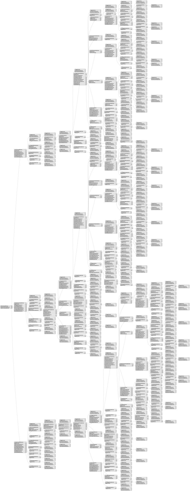

Overview:
Backtest-kit is a production-ready TypeScript framework for backtesting and live trading strategies with crash-safe state persistence, signal validation, and memory-optimized architecture. The framework follows clean architecture principles with dependency injection, separation of concerns, and type-safe discriminated unions.
Core Concepts:
Architecture Layers:
Key Design Patterns:
Data Flow (Backtest):
Data Flow (Live):
Event System:
Performance Optimizations:
Use Cases:
Test Coverage:
The framework includes comprehensive unit tests using worker-testbed (tape-based testing):
All tests follow consistent patterns:
This interface defines the information shared when a trading walker is stopped, usually by calling Walker.stop(). It's like a notification that a specific trading strategy needs to be paused.
The message includes the trading symbol involved, the name of the strategy being halted, and the walker's name, allowing for precise targeting when multiple walkers are active.
Importantly, these stop signals are exclusive to backtesting scenarios. The 'when' field indicates the virtual time, derived from the strategy's execution timeline, not the actual clock time.
The WalkerStatisticsModel helps organize and present the results of your backtesting experiments, particularly when you’re comparing multiple trading strategies. It's built upon the foundation of WalkerResults, adding extra information about how your strategies performed relative to each other. Think of it as a container holding a list of detailed reports for each strategy you tested, allowing for easy comparison and evaluation. The strategyResults property holds these individual strategy reports, giving you a clear view of each strategy’s performance.
The WalkerContract represents a step in the process of comparing different trading strategies. It’s triggered each time a strategy finishes being tested and its performance is evaluated.
This contract provides a snapshot of the progress, including details like the name of the walker performing the test, the exchange and timeframe being used, the specific symbol being traded, and the name of the strategy just completed.
You’ll find key performance statistics within the stats property, along with the specific metric being optimized, its current value for the tested strategy, and the overall best metric seen so far across all strategies.
It also tells you how many strategies have been tested and how many remain, and confirms that the test is based on backtesting data, not live trading. Finally, the when property reveals the virtual execution time associated with the backtest, which helps align results across different components.
This contract signifies the completion of a testing run, specifically when all strategies have been evaluated. It bundles together a wealth of information about the entire process.
You'll find details about the specific trading environment used – the walker's name, the symbol traded, the exchange, and the timeframe.
It also includes the optimization metric used, the total number of strategies tested, and importantly, the name and performance metrics of the best-performing strategy.
The contract also holds detailed statistics for that top strategy and a confirmation that it’s a backtest event. Finally, a timestamp indicates when the testing occurred relative to the trading time, not real-world time.
This notification signals that a validation error occurred during a trading process. It's a way for the system to let you know something went wrong when checking your trading rules or conditions.
Each notification has a unique identifier (id) to track it.
The notification includes detailed information about the error itself, packaged as an object containing a stack trace and additional metadata. A plain-language explanation of the error (message) is also provided to help you understand the problem.
Importantly, this type of notification always indicates an issue originating from the live trading environment, not a simulated backtest – the backtest property will always be false.
This interface, ValidateArgs, helps ensure the names you use for different components of your backtest are correct. Think of it as a safety net to prevent errors caused by typos or using outdated names.
It specifies that for properties like 'ExchangeName', 'FrameName', and 'StrategyName', you'll provide an enum – essentially a list of allowed values. The backtest-kit will then verify that the names you provide actually exist within the expected set of options for each category.
Each property corresponds to a specific part of the backtest configuration: exchange, timeframe, strategy, risk profile, action, sizing method, and parameter sweep. By using this interface, you're ensuring that all your component names are properly aligned with the framework’s expectations.
This notification is triggered when a trailing take-profit order is executed, providing detailed information about the trade. It includes essential data like the unique identifier, timestamp, and whether the trade occurred in backtest or live mode. You'll find details about the trading pair, strategy, exchange, and the signal that initiated the action, along with specifics about the price adjustments and original order levels.
The notification also breaks down the trade’s financials – cost, multiplier, and total entries – alongside performance metrics such as peak profit, maximum drawdown, and percentage profit/loss, all calculated from the entry price. Extensive information about the position’s journey, from its entry to its exit, is available, including prices and costs associated with peak profit and maximum drawdown points. A human-readable note can provide extra context for the trade's reason. Finally, it contains timestamps regarding signal creation, pending and notification creation.
This interface describes a trailing take profit event within the backtest-kit trading framework. It represents a situation where a take profit level has been adjusted based on a trailing stop mechanism.
The action property confirms this is a trailing take event.
The percentShift value defines how much the take profit price trails the market price.
You'll find the currentPrice at which the trailing adjustment occurred, as well as performance metrics for the trade including the total profit and loss (pnl), the highest profit achieved (peakProfit), and the largest drawdown experienced (maxDrawdown).
The position property indicates whether the trade is a long or short position.
Essential details about the trade itself, such as the entry price (priceOpen), take profit (priceTakeProfit, and the original take profit before trailing adjustments originalPriceTakeProfit), and stop loss prices (priceStopLoss, originalPriceStopLoss) are also included.
Finally, scheduledAt records when the event was created, and pendingAt marks when the trade was activated.
This notification tells you when a trailing stop order has been triggered and executed. It provides detailed information about the trade, including the symbol involved, the strategy that generated the signal, and whether it occurred during a backtest or live trading. You’ll find key data points like the entry and exit prices, stop-loss levels, and the overall profit or loss (PNL) associated with the position, along with information about peak profit and maximum drawdown. It also includes specifics about any DCA averaging or partial closes that occurred, giving a full picture of the trade’s lifecycle. The notification includes details like the original signal creation timestamp, when the position became active, and a human-readable note for added context.
This describes a trailing stop event, which is triggered when a trailing stop loss mechanism adjusts the stop price. It tells you what action occurred – specifically, a trailing stop – and provides detailed information about the trade that was affected.
You'll find details like the percentage shift used to adjust the stop loss, the current market price when the adjustment happened, and the performance metrics of the trade so far, including profit and loss (PNL), peak profit, and maximum drawdown.
The event also reveals the trade's direction (long or short), the original entry price, and both the current take profit and stop loss prices. Critically, it also includes the original take profit and stop loss prices, before any trailing adjustments were made. A timestamp of when the signal was created and when the position was activated is also included for tracking purposes.
This describes a standardized way to represent events happening during a trading process, like when a trade is scheduled, opened, or closed. It's like a common language for different parts of the trading system to share information about what's going on. The TickEvent object contains detailed data – things like timestamps, prices, and how much profit or loss has been made – depending on the type of event that occurred. Fields like priceTakeProfit and priceStopLoss give specifics about order parameters, while totalEntries tracks how many times a trade has been averaged. Certain data points, such as close reasons or peak/fall PNL, are only available for certain event types. It helps standardize reporting and analysis of trades.
This model holds statistics about signal synchronization events. It gives you insight into how your signals are being synced and processed.
You'll find a complete list of all sync events, each containing detailed information, within the eventList property. The totalEvents property simply tells you the overall number of sync events that occurred. To track signal activity, openCount tells you how many times signals were opened, and closeCount shows how many were closed.
This data structure holds all the important information about what's happening during a trading signal’s lifecycle, making it easy to create reports. Think of it as a detailed log entry for each significant event related to a trade.
It includes the exact time of the event, which trading pair was involved, the name of the strategy and exchange used, and whether this event occurred in a live or backtesting scenario. Each signal has a unique ID, and the data describes the action taken – like opening or closing a position.
You'll find details about the trade itself: the current price, the direction of the trade (long or short), entry, take profit, and stop-loss prices, and even the original values before any adjustments. For trades using DCA (Dollar Cost Averaging), the total number of entries are tracked.
The data also tracks financial information like profit and loss (PNL), the peak profit reached, the maximum drawdown experienced, and the reason for closing the trade. A timestamp marks when the signal was initially created, and when the trade became active.
This model holds a collection of statistics derived from your trading strategy's actions during a backtest. Think of it as a detailed scorecard of what your strategy did.
You'll find a complete list of events, along with counts for various actions like closing pending orders, taking partial profits or losses, utilizing trailing stops, and setting breakeven points.
It also tracks events related to scheduled actions, such as activating or canceling orders. Finally, it provides a count of average-buy (dollar-cost averaging) events performed by the strategy. This data helps you understand the nuances of how your strategy behaves over time.
This notification lets you know when a trading strategy has been paused or resumed. Think of it as a signal that the strategy isn't actively opening new positions. While paused, the strategy still monitors and manages any existing trades.
The notification includes important details like the strategy's name, the trading pair involved, and whether it's happening in backtest or live mode. You’ll also find a timestamp showing exactly when the pause state changed and the new pause state (true for paused, false for resumed). It also provides context using the exchange and frame names.
The StrategyEvent provides a unified way to track everything that happens during a trading strategy's execution, whether it's a backtest or a live trade. It bundles all the key details about an action, like when it happened, which trading pair was involved, and the strategy’s name.
Think of it as a comprehensive log entry for each trade – you'll find information like the current market price, the percentage to close a position, and the IDs associated with scheduled or pending actions. It also includes details relevant to specific actions like DCA averaging, like the effective entry price and the number of entries made.
The event also captures the position details – whether it's a long (buy) or short (sell) trade – along with entry, take profit, and stop-loss prices. You'll even see original prices before any trailing adjustments. The timestamp of when the signal was initially created and when the position became pending are also included for a complete picture of the trade lifecycle. Finally, it records the P&L at the time of the action and any optional notes provided.
This notification tells you when a trading signal is going to be executed in the future. Think of it as a heads-up that a trade is planned.
Each notification has a unique ID, a timestamp indicating when the signal was scheduled, and whether it's part of a backtest (historical simulation) or a live trade. It includes details like the trading pair (e.g., BTCUSDT), the strategy that generated the signal, and the exchange where the trade will happen.
You'll also find information about the trade itself, such as the trade direction (long/buy or short/sell), target prices for entry, profit taking, and stop-loss levels. The notification includes details about any averaging (DCA) strategies used, along with information about the cost of the trade, leverage applied, and margin settings.
The notification also reports on the position’s performance so far, including peak profit, maximum drawdown (biggest loss), and profit/loss percentages, along with the prices at which these milestones were achieved. Finally, there’s an optional note field for human-readable explanations about the trade. This gives you a comprehensive picture of a scheduled trade, allowing you to understand the reasoning and potential outcomes.
This notification tells you when a new trade has been opened, whether it's in a backtest or live trading. It provides a wealth of details about the trade, including a unique ID, the exact time it was opened, and whether it was a long (buy) or short (sell) position.
You'll find information about the exchange used, the strategy that triggered the trade, and the specifics of the trade itself - like the entry price, take profit levels, and stop loss.
The notification also goes deep into the performance of the trade, providing peak profit and maximum drawdown figures, along with the prices and costs associated with those points. You’ll see data about how many entries were used (for averaging strategies) and how many partial closes were executed.
Finally, it includes optional notes to help explain the reasoning behind the trade, as well as timestamps related to its scheduling and activation.
This framework provides a way for trading strategies to broadcast informational notes about open positions. These notifications, called SignalInfoNotification, give you detailed insights into the position's status, performance, and key metrics.
Each notification includes a unique identifier, a timestamp, and whether it originates from a backtest or live trading scenario. You'll find information about the trading symbol, strategy, exchange, and a unique signal identifier.
The notification breaks down the specifics of the trade, including the entry and take profit/stop loss prices (both original and adjusted for trailing), the trade direction (long or short), and the cost of the initial entry.
Key performance data is also included, such as total profit/loss (PNL), peak profit, maximum drawdown, and associated prices and percentages. You can access details about the number of entries and partials, along with costs and percentages for entry and exit points.
Finally, the notification also provides a user-defined note from the strategy itself, an optional notification ID, and timestamps related to the signal's creation and activity. This comprehensive set of data allows for detailed monitoring and analysis of a strategy's performance and trade execution.
This framework provides a way for your trading strategies to send out informational messages about their actions. Think of it as a way to keep track of what's happening, especially during backtesting.
When a strategy wants to share a message—perhaps a custom annotation, a debugging output, or something to be sent to an external system—it uses commitSignalInfo(). This triggers an event that uses the SignalInfoContract to structure the information.
The SignalInfoContract bundles details like the trading pair symbol, the strategy's name, which exchange it’s using, and the specific timeframe it's operating in. It also includes a snapshot of all signal data at that moment, the current market price, a custom note you can add, and an optional ID for tracking. A crucial flag indicates whether the event happened during a backtest (using historical data) or in live trading. Finally, it provides both a timestamp and a Date object to indicate when the event occurred – remember that in backtesting, the 'when' represents the candle time, not wall-clock time. You can listen for these events to react to the strategy's signals or to log them.
This contract, SignalEventContract, helps you keep track of when trading positions are opened or closed without needing to monitor every signal. It's like a notification system for your positions—you'll receive a signal whenever a position is either initiated or terminated.
The events are triggered during backtesting or live trading and provide essential details about the position itself. You'll see information like the trading symbol, the name of the strategy that created the signal, the exchange involved, the timeframe being used, and the complete data related to the signal, including entry and stop-loss prices.
Crucially, when a position closes, you'll receive the reason behind that closure, whether it's a take-profit, stop-loss, time expiry, or user intervention. You'll also get the current market price at the time of the event, and a flag indicating whether the event occurred during a backtest or live trading. The when property provides a timestamp that's relevant to either the live moment or the historical candle being processed.
This interface, SignalData, describes the data you'll find for each completed trade when analyzing your backtest results. Think of it as a record of a single trade, detailing everything about its lifecycle. It includes the name of the strategy that created the trade, a unique ID for tracking purposes, and the symbol being traded. You’ll find information about whether the trade was a long or short position, as well as the percentage profit or loss (PNL) realized. Crucially, it also tells you why the trade closed and provides timestamps for when it started and ended, letting you understand the timing of your trades.
This defines the fundamental information shared by all signal commit events within the backtest-kit framework. Each event, whether generated during a backtest or in live trading, carries details about the trading pair involved, the name of the strategy that produced the signal, and the exchange used. You'll also find information about the timeframe being used (important for backtesting) and whether the event originated from a backtest or live environment.
A unique ID, timestamp, and a Date representation of the event time are included. Crucially, the signal commit also records the number of entries and partial closes executed, along with the initial entry price. The signal itself is captured as a snapshot of data. Finally, a helpful note field allows for adding a human-readable explanation for the signal.
This notification tells you when a trading position has been closed, whether it was a take profit, stop loss, or something else. It provides a wealth of information about the trade, like a detailed post-mortem.
You'll find details such as the unique identifier of the signal, when it was closed, and whether it was a backtest or a live trade. It also includes specifics about the trading pair, the strategy used, and the exchange where it happened.
Beyond the basics, you get data about the entry and exit prices, profit and loss figures (both percentage and absolute), and even the peak profit and maximum drawdown experienced during the trade’s lifetime. This includes important details on slippage and fees impacting PnL.
There are also fields detailing the number of entries, partial closes, and the initial cost of the position. Finally, it explains why the position was closed and how long it was active. Essentially, this notification captures everything you need to understand a completed trade.
This notification tells you when a trading signal was canceled before it could be executed. It's a way to understand why a signal didn't trigger a trade, which can be helpful for debugging strategies or understanding market conditions.
The notification includes a lot of details, like a unique ID, when it happened, and whether it occurred during a backtest or live trading. You’ll also find information about the intended trade: the symbol, direction (long or short), planned entry and exit prices, and how much capital was to be used.
Crucially, it explains why the signal was canceled – perhaps due to a timeout or a user intervention – and gives a timestamp indicating how long the signal was pending. There's also a field for adding a custom note to explain the cancellation in more detail. You’ll see data about potential profit and loss, although these are essentially zero because the trade never happened. Finally, the notification details the original signal creation time, pending time, and any durations or identifiers associated with the signal.
The Signal object holds information about a trading signal, representing a specific entry or adjustment to a position.
It tracks the initial priceOpen at which the position was established.
Internally, it maintains a history of entries made for the signal. Each entry includes the price, associated cost, and the timestamp of the entry.
Similarly, it stores a record of any partial exits or adjustments made to the position, detailing the type (profit or loss), percentage, current price, cost basis at the time of the adjustment, the number of units held, and the timestamp. This allows for a complete picture of the signal's performance over time.
This section details the Signal$3 object, which represents a trading signal within the backtest-kit framework. It's designed to track the performance of a trade.
The priceOpen property stores the initial price at which the position was entered, giving you a baseline for profitability calculations.
_entry is an array that holds information about each entry point within the signal. Each entry includes the price, associated cost, and timestamp.
_partial is another array, tracking any partial exits from the position. It logs details like exit type (profit or loss), percentage of the position exited, the price at the time of exit, the cost basis at the time of close, the number of shares or contracts at close, and the timestamp of the action.
This Signal object holds information about a trading position.
It tracks the initial entry price, which is crucial for calculating profits and losses.
You’ll also find details on entries, including the price, cost, and when they occurred.
Furthermore, it keeps a record of any partial exits from the position, noting the type (profit or loss), percentage, current price, cost basis at the time of exit, the number of shares/contracts sold, and the timestamp. These records help analyze how the position was managed and its performance.
This Signal object holds key data points about a trading position.
It tracks the opening price, which is the price at which the trade was initiated.
The _entry property is an array that records details about each entry point into the position, including price, cost, and timestamp.
Similarly, _partial stores information on any partial exits from the position, noting whether they were for profit or loss, the percentage of the position exited, current price, cost basis, entry count at the time of exit, and the timestamp. These details give a complete history of the position’s movements.
This data structure brings together all the important details about scheduled, opened, and cancelled trading events, making it easy to generate reports and analyze performance. Each event record includes the exact time it happened, the type of action taken (scheduled, cancelled, or opened), and which trading pair was involved. You'll also find the signal's unique ID and the position type.
Beyond the basics, it captures key pricing information like the entry price, take profit, stop loss, and their original values before any adjustments. If a DCA (Dollar-Cost Averaging) strategy was used, you'll see details about the number of entries and partial closes. The Profit and Loss (PNL) is also recorded at the time of the event.
For cancelled events, reasons for cancellation are provided along with a unique cancellation ID for user-initiated cancellations. Opened events have a timestamp indicating when the position became active, while all events track the original scheduling time. Duration is tracked for cancelled and opened events.
This model holds statistics about your scheduled signals, helping you understand how they're performing over time.
It keeps track of every scheduled event, including those that were opened and cancelled, and provides summaries like the total number of each.
You can also monitor key rates: the cancellation rate (how often signals are cancelled) and the activation rate (how often signals are opened).
Lower cancellation rates and higher activation rates are generally desirable.
Finally, it calculates average waiting times to see how long signals typically stay in a scheduled or cancelled state.
This describes a regular heartbeat signal related to automated trading strategies that run on a schedule. Think of it as a notification letting you know a particular trading strategy is still actively watching a specific market (like BTCUSDT) on a certain exchange.
It provides details like the trading pair, strategy name, exchange, and timeframe involved. You'll also get the complete data of the trading signal itself, including things like entry price and stop-loss levels.
The signal includes the current market price and whether the event is happening during a historical backtest or real-time live trading. Crucially, it allows you to build your own custom logic—maybe automatically canceling a trade if the price moves unexpectedly—because you can react to these ping events. The timestamp gives you the exact time of the ping, which is either the moment it occurred in live trading or the time of the historical candle being processed during a backtest.
This contract helps you keep track of scheduled trading signals—those waiting for the right market conditions to activate—without needing to constantly monitor the entire signal stream. It provides notifications when a signal is initially scheduled and when it's cancelled before it ever becomes active.
You’ll see events for two main actions: "scheduled," meaning a new signal is waiting, and "cancelled," meaning a signal was removed before it activated. This lets you react to changes in the scheduled pipeline.
Each event gives you details about the signal, including the trading pair (symbol), the strategy that created it, and the timeframe it applies to. You'll also receive the full signal data, the reason for cancellation (if applicable), the current market price at the time of the event, and whether it's part of a backtest or live trading. Importantly, it doesn't notify you about when a signal actually activates—that’s handled elsewhere.
This is particularly useful for callbacks, letting you build systems that respond to changes in your scheduled order book.
This model helps you understand and track risk management performance by providing key statistics about risk rejection events.
It contains a detailed list of all the rejected events, allowing for granular analysis.
You’ll also find the total number of rejections, along with breakdowns categorized by the symbol involved and the strategy used. This enables you to quickly identify areas where risk controls might need adjustment.
This notification lets you know when a trading signal was blocked by your risk management rules. It’s like a heads-up that something prevented a trade from happening.
The notification includes details like a unique ID, the time it occurred, and whether it happened during a backtest or live trading.
You’ll see information about the specific trade that was rejected, including the symbol (e.g., BTCUSDT), the strategy that generated the signal, and the exchange involved. Most importantly, the rejectionNote field gives you a clear explanation of why the signal was rejected.
Other helpful details include the current market price, the direction of the intended trade (long or short), and information about take profit and stop-loss levels. You can also find details related to position management such as active position count, leverage (multiplier), and margin type (isolated). A signal note explains why signal has been created. Finally, it records when the notification was created.
This data structure represents events where trading signals were blocked because they violated pre-defined risk limits. Each RiskEvent contains a detailed record of the rejected trade.
You'll find information like the exact timestamp of the event, the trading pair involved, and specifics about the signal that was rejected. It also includes details about the strategy and exchange involved, as well as the current market price and the number of active positions at the time of the rejection.
A unique ID and a note explaining the reason for the rejection are also included. Finally, a flag indicates whether the event occurred during a backtest or live trading.
The RiskContract represents a rejected trading signal due to risk validation – think of it as a notification when the system prevents a trade from happening because it violates safety limits. This isn't triggered by allowed trades, just the ones that are blocked.
It provides detailed information about why a signal was rejected, including the symbol of the trading pair (like BTCUSDT), the specifics of the signal itself (like the intended position size and price levels), and the name of the strategy that was trying to place the trade.
You’ll also find details about the frame and exchange involved, the current market price, and the overall number of active positions at the time. A unique ID and human-readable explanation for the rejection are included to aid in troubleshooting. Finally, a timestamp and a date indicate when the rejection occurred, along with a flag indicating whether it happened during a backtest or live trading. Services like report generators and user callbacks use this information to monitor and understand risk management actions.
The ProgressWalkerContract represents updates you receive while a background task, like analyzing trading strategies, is running. It tells you what's happening behind the scenes during the process.
You'll see information like the name of the task being done, the exchange and frame being used, and the trading symbol involved.
The contract also keeps track of the total number of strategies being processed, how many have already been handled, and the overall percentage of completion.
Importantly, these progress updates are only for backtesting scenarios.
Finally, it includes a timestamp indicating when the last strategy's backtest finished, which is virtual time, not actual clock time.
This interface lets you keep tabs on how a backtest is going. It's designed to give you updates during the backtesting process itself.
You’ll see details like which exchange and strategy are being used, the trading symbol involved, and the total number of data points (frames) the backtest will analyze.
The interface also provides the number of frames already processed and the percentage of completion, so you can understand how far along the backtest is.
Importantly, there’s a when property that indicates the virtual timeframe being processed at the time the update was generated, representing the end time of the current frame. Finally, the backtest flag confirms that these events are specific to backtesting scenarios.
This model holds performance data collected during backtesting, organized by the strategy being tested. It tells you the name of the strategy and the overall number of performance events that occurred.
You can also see the total time it took to gather all this performance information.
The metricStats section breaks down the data further, grouping statistics based on the type of metric being measured. Finally, the events property contains the complete, unfiltered list of all performance events recorded, giving you a detailed view of what happened during the backtest.
The PerformanceContract lets you keep tabs on how your trading strategies are performing. It's a way to monitor how long different parts of your code take to run, which helps you pinpoint areas that might be slowing things down.
Each PerformanceContract contains details like the exact time the event occurred (both as a timestamp and a Date object), the time within the backtest or live environment, and the timestamp of the previous event. You'll also find information on what kind of operation was performed (like calculating an indicator or placing an order), the name of the strategy and exchange involved, the frame being processed, the trading symbol, and whether the event occurred during a backtest or live execution. This data is key for understanding performance bottlenecks and optimizing your trading system.
This interface describes the events that happen when a trading strategy is paused or resumed.
When a strategy is paused, it stops creating new trading signals – existing orders are still managed.
You can use these events to inform users, like sending notifications when trading is temporarily stopped or started again.
The event provides key details like the trading symbol, whether the pause state is now active or inactive, the exact time of the change, the strategy's name, the exchange involved, the timeframe being used (e.g., 1 minute), and whether the event relates to a live trade or a backtest. The when property gives you the event's timestamp, which represents either virtual time in backtests or real-time when the strategy is live.
This data model holds key statistics about partial profit and loss events during a backtest. It essentially breaks down how many times your strategy generated a profit versus a loss, along with the total number of events that occurred. You’ll find a detailed list of each individual event in the eventList property. The totalEvents value simply represents the sum of all profit and loss occurrences, while totalProfit and totalLoss give you the counts for each type of event.
This defines how partial profit milestones are tracked during trading. It represents when a trade hits a pre-defined profit level, like 10%, 20%, or 30% gain.
The system will send out these "partial profit" events as a trade progresses, allowing you to monitor how your strategy is performing and when it’s taking partial profits.
Each event tells you important details like the trading symbol (e.g., BTCUSDT), the strategy name that triggered it, the exchange being used, and the current market price. You’ll also find the original signal data, including the stop-loss and take-profit prices. Critically, it specifies the level achieved (10%, 20%, etc.).
The backtest flag indicates whether the event came from a historical simulation or live trading, and timestamp & when provides information about when the milestone was reached. This helps track the trade's progress and understand its performance over time.
This notification tells you when a partial profit-taking action happens during a trade. It’s like a detailed report showing what just happened to your position.
The type clearly identifies this as a "partial_profit.commit" event. You'll find a unique id to track this specific action, along with the exact timestamp it occurred. It also indicates whether this happened during a backtest (simulated trading) or real-time trading.
The report includes details about the trade itself: the symbol being traded, the name of the strategyName that initiated it, the exchangeName used, and a unique signalId. It specifies what portion of the position was closed (percentToClose) and the currentPrice at the time of the partial close.
You'll also see information on how the position was set up: position (long or short), the priceOpen, priceTakeProfit, and priceStopLoss levels, and their original values before any trailing adjustments. There’s a record of the initial cost of the position, any multiplier applied, and whether the trade used isolated margin.
The notification also provides data on the number of entries (totalEntries) and how many partial closes have been made (totalPartials). It shows the total pnl, peakProfit, maxDrawdown, and the associated percentages. A breakdown of pnlPriceOpen and pnlPriceClose is included, as well as values related to the peak profit and maximum drawdown, offering a comprehensive view of the position's performance. A note field allows for adding custom descriptions, while scheduledAt, pendingAt, and createdAt timestamps provide a timeline of the signal and notification.
This data represents a partial profit-taking action within a trading strategy. It details a specific event where a portion of an existing position is being closed.
The action property confirms this is a partial profit event. The percentToClose indicates what percentage of the original position size is being closed. You’ll also find the current market price (currentPrice) when the action was triggered, along with a comprehensive view of the position's profitability including the total profit and loss (pnl), and its high-water marks – both the peak profit achieved (peakProfit) and the maximum drawdown experienced (maxDrawdown).
The data includes information about the original trade: whether it was a long (position) or short position, the entry price (priceOpen), and the intended take profit and stop loss levels, both as they were initially set (priceTakeProfit, priceStopLoss), and as they were after any trailing adjustments (originalPriceTakeProfit, originalPriceStopLoss).
Finally, the timestamps (scheduledAt, pendingAt) record when the signal was created and when the position originally became active.
This notification tells you when a trading strategy has reached a pre-defined profit milestone, like 10%, 20%, or 30% gain. It's like getting a progress report on your trades! The notification includes important details like a unique ID, the exact time it happened, whether it’s a backtest or a live trade, and the trading pair involved.
You’ll also find information about the strategy and exchange used, the signal’s unique identifier, and the exact level of profit reached. The notification provides the current market price, the original entry price, the trade direction (long or short), and the intended stop-loss and take-profit prices.
It also shows the cost of the trade, how much leverage was applied, and details about the position’s overall performance including total entries and partial closes. Key performance indicators such as peak profit, maximum drawdown, and percentage profit/loss are included, along with detailed pricing and cost information at those points. Finally, there’s an optional note for extra context about the trade's reasoning and timestamps for when the signal was scheduled, became pending, and when this notification was created.
The PartialLossContract represents events triggered when a trading strategy hits predefined loss levels, like -10%, -20%, or -30%. Think of it as a notification system letting you know when a strategy is experiencing drawdown.
These events are useful for tracking how well your strategies are managing risk and for generating reports on strategy performance. You’ll see them when a strategy experiences losses, but only once for each loss level reached per signal.
The information included provides a comprehensive view of the situation: which symbol and strategy is involved, the exchange and frame, the original signal data, the current market price, the precise loss level reached, whether it's from a backtest or live trade, and the exact time the event occurred. It's designed to be used by systems that need to track losses or by users who want to be notified directly.
This notification signals that a portion of a trading position has been closed. It provides detailed information about the partial closure, including a unique identifier, the exact time it happened, and whether it occurred during a backtest or live trading. You’ll find specifics about the trading pair, the strategy and exchange involved, the percentage of the position that was closed, and the current market price at the time of the event.
The notification also contains crucial details about the original position, such as its entry price, take profit and stop loss levels, and the total cost of the position. It further breaks down performance metrics like peak profit, maximum drawdown, and profit/loss percentages, offering a comprehensive view of the position’s lifecycle. Additional details include information on signal creation timing, pending status, and an optional note explaining the rationale behind the signal. This information is valuable for analyzing trading decisions and understanding the overall performance of a strategy.
This describes a partial loss event, which happens when a portion of a trading position is closed. It contains all the details about why and how this partial close occurred.
You’ll find information like the percentage of the position that was closed, the current market price at the time, and the overall profit and loss (PNL) of the position so far.
It also includes data about the position’s performance – its peak profit, maximum drawdown, and how it compares to the original entry and stop-loss/take-profit prices. Finally, it provides timestamps indicating when the signal was created and the position was initially activated. All this information paints a complete picture of this specific partial loss action.
This notification tells you when a trading position has reached a predefined loss milestone, like -10%, -20%, or -30% of its initial value. It's a signal that things aren't going as planned and might require attention.
Each notification has a unique ID and timestamp, along with details about the trade – the symbol involved (like BTCUSDT), the strategy and exchange that initiated it, and the direction of the trade (long or short). You'll also find information on the original entry price, current price, stop-loss and take-profit levels, and the number of entries and partial closes executed.
It provides key performance indicators like peak profit, maximum drawdown, and profit/loss percentages, offering a view into the position’s historical performance. The notification also includes details regarding slippage, fees, and the total cost of the position, and whether the position is isolated or not. Finally, there's a field for an optional note providing extra context about the signal. The notification also tracks when the signal was initially scheduled, became pending, and when the notification itself was generated.
The PartialEvent object gathers all the key data points related to profit and loss milestones during a trade. It essentially acts as a record of how a trade is performing, storing information like when it happened (timestamp), whether it's a profit or loss (action), and the specifics of the trade itself (symbol, strategy name, etc.).
You'll find details about the trade’s entry and exit points (priceOpen, priceTakeProfit, priceStopLoss), as well as original target prices set when the trade was initiated.
If the strategy used dollar-cost averaging (DCA), you can access data regarding the number of entries (totalEntries) and partial closes (totalPartials).
Finally, there's a field for a human-readable note (note) to describe the reasoning behind the trade and timestamps related to when the position became active and when the signal was created. The backtest boolean clarifies if the event occurred during a backtest or a live trading session.
This notification tells you about a new position opening – whether it's an immediate trade or a scheduled one. It’s like getting a heads-up when a strategy takes action.
The notification provides a unique ID and timestamp to track the event. You'll also find details about where and when the trade occurred, the trading pair involved, and the strategy responsible.
Key information includes the trade direction (long or short), the entry price, and any associated take profit or stop-loss levels – both as initially set and after any adjustments.
It also contains profit and loss (PNL) data, including peak profit, maximum drawdown, and related price points – allowing you to assess the position's performance. The notification clarifies if this event happened during backtesting or live trading.
Finally, it includes additional information, such as the number of entries and partial closes involved, and any notes attached to the signal explaining the reasoning behind the trade.
This notification lets you know when a trading signal has been closed, whether it's because a profit target was hit, a stop-loss was triggered, or the signal expired. It's used in both backtesting and live trading environments. The notification contains a wealth of information about the closed position, including when it happened, the trading pair involved, and how much profit or loss was made.
You'll find details like the peak profit achieved, the maximum drawdown experienced, and the prices at which the position was opened and closed. It also provides insights into the position's history, such as the original take profit and stop-loss prices before any adjustments, and the number of entries and partials executed. The closeReason field clearly explains why the signal was closed. Overall, this notification gives you a complete picture of a closed trade's performance and journey.
This notification provides a snapshot of an open order's status, helping you confirm that your trading signals are still valid with the exchange. It's triggered periodically when a strategy is running and checks if the order associated with a signal is still active on the exchange.
Think of it as a "ping" to the exchange to verify the order still exists.
The notification includes a wealth of details:
The framework automatically throttles these notifications to prevent overload; they’re only sent once every 15 minutes per signal. The notification stops being sent if the signal is closed or canceled.
This defines a common structure for events related to order synchronization within the backtest-kit trading framework. These events, categorized as either "schedule" or "active," provide crucial information about order activity.
Each event includes details like the trading symbol, the strategy that generated the signal, the exchange used, and whether the event originates from a backtest or live trading environment. You'll also find a unique identifier for the signal, a timestamp, and the precise time of the event.
The signal property holds all the public details of the signal itself. A key element is the attempt counter, which tracks consecutive failures and helps manage retries for order placement and closing, ensuring a robust and resilient trading process. This standardized structure streamlines the handling and interpretation of order synchronization events.
This event signals that a trading order, initially monitored by the system, has reached a terminal state and will no longer be actively managed. It's essentially a notification that the framework has decided an order is finished – either because it was filled, canceled, or liquidated externally, or because the system encountered too many problems trying to manage it. The type property indicates whether it was an active order (a regular trade) or a scheduled order (a pending order meant to be placed later).
The reason clarifies why the order reached this end – either because it was definitively not found on the exchange (“deleted”) or because the system couldn't reliably continue managing it (“exhausted”).
The message includes a wealth of information about the trade itself, like the trading pair, strategy, exchange, timeframe, original entry and stop-loss prices, realized and unrealized profit/loss, and details about any averaging or partial closures that occurred. It's essentially a snapshot of the order's entire history up to the point of termination. Notably, this event only occurs in live trading; backtests don't include these order checks.
This notification signals the end of a check process for an order, specifically when a critical issue arises. It's a rare event that happens only once and isn’t subject to throttling. It's triggered when an order is either permanently missing or has failed repeatedly.
The notification contains a wealth of information about the order and the trading position it represents. You’ll find details such as the trading pair, strategy name, exchange, signal identifier, and order type (either an active position or a scheduled order). It also explains why the check ended – either because the order couldn't be found ("deleted") or because a maximum number of attempts have been exceeded ("exhausted").
Beyond the core issue, you’ll see data reflecting the order’s performance, including prices, costs, P&L metrics (both current and peak), and various timestamps related to the order's lifecycle. This data is incredibly useful for analyzing why the check terminated and understanding the order's history. Think of it as a comprehensive snapshot of the order's status right before it's closed or cancelled.
This notification signals a definitive rejection of an order by the exchange – it's a terminal event, meaning the attempt is truly over and won't be retried. It's only triggered when the order placement fails completely, not for temporary hiccups.
Each rejection has a unique ID and timestamp. You'll see details like the strategy name, exchange, the signal's identifier, and the specific type of order that was rejected (either an immediate order or a scheduled one). The attempt number indicates how many times the system tried placing the order before it was definitively rejected.
Crucially, the message field provides the reason for the rejection, taken directly from the exchange's error message.
Along with these details, the notification provides a snapshot of the position's performance up to the rejection point, including P&L, peak profit, and maximum drawdown metrics, along with relevant price data and entry/exit prices. It also includes information like cost, leverage multiplier, margin type, and key pricing details. Finally, it includes creation timestamps for the signal and the notification itself, alongside any notes associated with the signal.
When a trading order or scheduled entry can't be executed, this event signals a definitive rejection. It means the attempt to open a position or place an order is completely unsuccessful and won't proceed.
The action property clarifies what specifically was rejected – whether it was a signal to open a position or a scheduled entry.
The cost tells you the total cost associated with the rejected order, representing all the costs involved in the attempted entry.
This notification tells you when a trading position couldn't be closed as expected – specifically, when the system tried to close it, but the broker rejected the attempt. It's a signal that something went wrong during the closing process, like the broker refusing the order.
This only happens in live trading environments, not during backtests.
The notification contains a lot of details about what happened, including:
Essentially, this notification provides a detailed record of a failed close attempt, enabling you to investigate and understand why the closure wasn’t successful. You'll find data related to profit and loss, entry and exit prices and more.
When a trading strategy attempts to close a position but the order is definitively rejected by the system, this OrderRejectCloseContract explains why. It indicates a definitive refusal of the closing order, meaning the engine will automatically close the position using the original reason for the attempted closure. This rejection is always categorized as "signal-close." The closeReason property provides details about the specific reason the closure was rejected, allowing for troubleshooting and adjustments to the strategy.
This event signals a definitive rejection of an order by the exchange, meaning retrying won't work. It's a terminal event, meaning it's the final word on that order attempt. You'll only see this for permanent failures, not temporary hiccups that the system tries to handle automatically.
The OrderRejectBase event tells you exactly which order was rejected: either an active order (like an opening, fill, or closing trade) or a scheduled order placed when a signal is created.
Each rejection is associated with a specific signal and has a unique ID (signalId) that ensures it's not repeated. The attempt field shows how many times the system tried before the final rejection.
You'll find important information included, like the trading symbol, the strategy that generated the signal, the exchange that rejected the order, and the reason for the rejection in the message field. You'll also get a snapshot of the position's performance at the time of rejection, including P&L, peak profit, and drawdown figures.
Crucially, this event only happens in live trading; it doesn't occur during backtests where the process is simulated. It's a notification-only channel; handling it shouldn't affect the core trading logic. The when field gives you the timestamp, which is virtual execution time during backtesting and real-time during live trading.
This event, OrderOpenContract, is triggered when a limit order placed by your trading strategy gets filled—essentially, when the exchange confirms your order to enter a position. It's a crucial signal, especially when using limit orders, as it provides confirmation that the trade has actually happened.
Think of it as a notification that the framework successfully entered a position for you.
In backtesting, this event fires when the candle conditions (low for long, high for short) are met, simulating the order fill. When live trading, it’s generated when the exchange confirms the order.
This event is really useful for keeping external systems in sync, like order management tools or audit logs.
The event provides a wealth of information about the trade, including the price at which the order was filled (priceOpen), the current market price (currentPrice), the overall profit and loss (pnl), peak profit, maximum drawdown, and the costs associated with entering the position. It also gives details about stop-loss and take-profit prices, both the original values and any adjusted values. You’ll find information about how the position was built, whether it was a single entry or involved averaging (totalEntries), and if any partial exits occurred (totalPartials). It also records when the order was initially scheduled and when the position was activated.
This notification signals that a trade has been confirmed and executed by the exchange – it's a key event after a trading signal is generated. It confirms that an order was either filled (for a market order) or that a resting order was placed on the exchange. This notification only occurs in live trading environments and isn't triggered by failed attempts.
The notification includes a wealth of information about the trade, such as the unique identifiers for the signal and the trade itself, the exchange used, and the trading pair involved. You'll also find details about the order type (whether it was an immediate fill or a resting order) and the number of attempts it took to execute.
Crucially, it provides performance data related to the position, including P&L, peak profit, and maximum drawdown, along with associated price points and entry/exit prices. It gives insights into the costs, leverage applied, margin type (isolated or not), and the trade direction (long or short).
Finally, you’ll get information on the entry and exit prices, the number of entries made (useful for DCA strategies), partial exits, and timestamps reflecting the signal's creation and activation. There's also an optional note field for any explanation accompanying the trade.
This describes what happens when your trading order is confirmed by your broker. It signals that a new position has either been opened – meaning the order was filled – or an order to place a position has been sent to the broker.
The action property tells you how the position was confirmed: either a "signal-open" to show the position is active, or "schedule" to indicate an order has been placed.
The cost property tells you the total expense associated with establishing that position, including all costs involved.
This notification signals a confirmed order closure – it’s the final confirmation that your trade actually went through on the exchange. It's only sent for live trades, not backtests.
It provides a wealth of information about the completed trade, including a unique ID, the timestamp of confirmation, and details like the trading pair, strategy name, and exchange used. You'll also find information about the signal that triggered the trade, including the client order ID.
The notification includes details about the order type, the number of attempts it took to execute, and the market price at the time of confirmation.
Crucially, it also provides a snapshot of the position's performance: profit and loss (PNL), peak profit, maximum drawdown, and key pricing data related to entry and exit. You'll see details of the original order parameters like take profit, stop loss and entry prices, along with the cost of the initial position and any leverage applied.
Finally, there’s information about the timing of the signal and position, and a reason code explaining why the trade was closed. A human-readable note might also be included to provide further context.
This describes what happens when a trading strategy closes a contract, specifically when the broker confirms the order execution. It signals that the exit order, whether triggered by a take-profit, stop-loss, time, or manual action, has been filled.
The action property always indicates a "signal-close," making it clear this is a closing event.
The closeReason property explains why the position was closed – was it a profit target reached, a loss limit hit, a time constraint, or something else?
This document describes the OrderFillBase event, a notification that’s fired when an order is confirmed and executed on an exchange. It's important to understand that this event signifies a confirmed order—meaning the broker has acknowledged the order was placed, unlike earlier 'attempt' notifications. Because of this, you won't see these events during backtesting or when orders are rejected or transiently fail.
Here’s a breakdown of the key information you’ll find in an OrderFillBase event:
Essentially, OrderFillBase gives you a complete snapshot of an order's execution and the position’s performance up to that point, designed for auditing and detailed analysis.
This event signals that the trading framework is continuing to monitor an order—it hasn't been confirmed as filled or canceled. Think of it as a reassurance that the system believes the order is still active on the exchange. It's emitted regularly while the system is actively watching the order, giving you updates on its status.
The type property tells you whether the order is backing an open position (active) or is a resting order waiting to be triggered (schedule). The attempt value is key – a value of 0 means the order check was successful (healthy) and resets any issues. A value greater than 0 indicates a temporary check failure, but the system is still assuming the order is open, with the number representing how many consecutive failures have occurred before tolerance is reached.
You'll find a wealth of information included with this event, like the trading symbol, strategy name, exchange, timeframe, signal details, current market price, unrealized profit and loss (PNL), and all original order prices. This detailed data provides a comprehensive snapshot of the order’s context and progress. This event only occurs during live trading; backtests don't involve these continuous checks. The system is designed to handle potential errors gracefully, ensuring the monitoring decision isn't affected by any listener issues.
This notification lets you know about the ongoing health of an order that's being monitored by the trading framework. It's sent after an initial check and indicates whether the order is still good to go, or if a temporary problem was handled. Think of it as a regular update on an order's status, confirming it's still active or that a small hiccup was resolved.
The notification includes a wealth of details about the order, like its type (active position or a scheduled order), the current market price, and all the relevant prices like entry, take profit, and stop loss, both original and adjusted. You’ll also see performance metrics such as unrealized profit/loss (PNL), peak profit, and maximum drawdown, all calculated up to the time of the check.
Crucially, the attempt property tells you if this is a routine update (attempt 0) or if a transient failure was tolerated (attempt > 0). It's throttled to avoid overwhelming you with notifications, ensuring only the most important updates are delivered. It also includes information about DCA averaging, partial closes and signal creation timestamps.
This event signals that a trading signal has been closed. It’s triggered when a signal is automatically closed due to reaching a take profit or stop loss level, expiring, or when a user manually closes it.
Think of it as a notification for external systems to update records – for example, canceling related orders or logging the final profit and loss.
The event provides a wealth of information about the closed position, including:
This event, called "signal-ping," is a crucial check performed by the system to ensure that orders placed by your trading strategies are still active on the exchange. It's like a periodic health check for your open positions and pending orders.
Think of it as a confirmation request: the framework is asking the exchange, "Hey, is this order still there?"
There are two main types of signal-ping events: one for actively managed positions ("active") and one for pending orders awaiting activation ("schedule").
How you respond to this check is important:
OrderDeletedError. This halts the process and prevents further monitoring.It's worth noting that this check doesn't happen during backtests as there's no live exchange to query.
The event provides a wealth of information about the signal, its execution, and the current state of the position, including pricing, profit/loss, and more. The attempt field tracks consecutive check failures and indicates how many times the system has tried to confirm the order's existence.
MetricStats provides a collection of statistics for a particular metric, giving you a comprehensive picture of its performance. It tracks how many times a metric was recorded and calculates key measurements like the total duration, average duration, and minimum and maximum values. You'll also find statistical insights such as the standard deviation, median, and percentiles (95th and 99th), which help understand the distribution of the metric's values.
Furthermore, it includes wait time statistics—minimum, maximum, and average—to assess the time gaps between metric events. These statistics combined offer a detailed understanding of a metric's behavior over time.
This describes a single message within a conversation, like you'd see when interacting with a large language model. Each message has a role, which tells you who sent it—whether it's instructions from the system, a user's input, the model's response, or the result of using a tool.
The content field holds the actual text of the message. Sometimes, assistant responses might only have tool calls and an empty content.
If the model uses a reasoning or chain-of-thought process, the reasoning_content provides extra insights into how the model arrived at its answer.
When the assistant uses external tools, the tool_calls property lists the calls made. You can also attach images to a message, and they can be provided as base64 strings, raw bytes, or Blobs. Finally, if a message is a response to a specific tool call, the tool_call_id identifies which call it's related to.
This model holds information about maximum drawdown events that have occurred during a backtest or trading simulation.
It keeps track of each drawdown event in a list called eventList, which is ordered from most recent to oldest. You can think of this list as a timeline of the worst performance periods.
Additionally, it provides a simple count, totalEvents, indicating the total number of maximum drawdown occurrences observed.
This object represents a single instance of a maximum drawdown experienced during a trade. It details when the drawdown occurred (timestamp) and for which trading pair (symbol) and strategy (strategyName, signalId). You'll find information about the position direction (long or short), and key performance data like total profit and loss (pnl), the highest profit achieved (peakProfit), and the magnitude of the drawdown itself (maxDrawdown).
It also includes important pricing details relevant to the trade: the price at which the record drawdown was reached (currentPrice), the entry price (priceOpen), and any pre-defined take profit or stop loss prices (priceTakeProfit, priceStopLoss). Finally, a flag (backtest) indicates whether this event occurred during a simulated backtest or a live trading scenario.
This contract provides information when a new maximum drawdown is detected for a trading position. It's designed to help you monitor and react to significant losses in a position's value.
The data includes details like the trading symbol, the current price, and the exact time of the drawdown event. You’ll also see information about the trading strategy, the exchange used, and the timeframe being analyzed.
Crucially, it tells you whether the drawdown event occurred during a backtest or live trading, allowing you to handle the information differently depending on the context. You can use this information to automatically adjust stop-loss orders or implement other risk management techniques as drawdown levels change. The signal property gives access to the public data associated with the trade that triggered the drawdown.
This model provides a comprehensive snapshot of your live trading performance by tracking various statistics derived from your trades. It keeps a record of every event, from initial setup to closing a position, and uses this data to calculate key performance indicators.
You'll find metrics covering everything from basic win rate and average profit per trade to more advanced measures like the Sharpe Ratio and Calmar Ratio, which consider risk-adjusted returns. The model also calculates trade durations, volatility (standard deviation), and pressure indicators to assess market sentiment.
It’s important to note that any of these numerical values might be null, signaling that the calculation was unreliable due to factors like missing data or instability. You can analyze how often trades win, how much you’re making on average, and how consistently you're achieving those results. Furthermore, it breaks down performance by analyzing consecutive win/loss streaks, and provides insight into the average durations of winning and losing trades. Finally, it evaluates the overall trend of your trading and how confident the system is in its assessment.
This component handles notifications about errors encountered during background processes. These aren't critical errors that stop everything, but issues that the system can recover from and continue running. Each notification has a unique identifier (id) for tracking purposes.
The type is specifically set to "error.info" to clearly identify it as an informational error notification. You'll also find a descriptive message to help you understand what went wrong, and a detailed error object that includes the stack trace and any additional information relevant to debugging. Finally, the backtest flag is always false, indicating that this error originated from a live trading context, not a backtest simulation.
This interface describes a special event called an "Idle Ping" that happens when a trading strategy isn't actively making decisions. It lets you know when a strategy is in a state of waiting, not responding to any active signals.
The Idle Ping includes important details about the strategy – what trading pair it’s monitoring (the symbol), the name of the strategy itself (strategyName), the exchange it's connected to (exchangeName), and whether it's running in backtest mode or live (backtest).
You’ll also find the current market price (currentPrice) and a timestamp (timestamp and when) to track exactly when this idle state occurred. The timestamp is crucial because it means something different in backtest mode (the time of the candle being analyzed) compared to live trading (the actual clock time).
Essentially, this lets you monitor the lifecycle of your trading strategies and understand when they’re waiting for instructions. You can listen for these events to build custom tools or analyses around strategy inactivity.
This defines the information needed to pre-load historical candlestick data, which is helpful for speeding up backtests. Think of it as telling the system exactly which asset, exchange, timeframe, and date range you want to download. You’ll specify the symbol like "BTCUSDT," the exchange name, the candle interval (like "1m" for one-minute candles or "4h" for four-hour candles), and the start and end dates for the data you want to retrieve.
This interface represents the outcome of running a single trading strategy within a backtest. It bundles together key details about that strategy's performance.
You'll find the strategy's name here, along with comprehensive statistics generated during the backtest, such as profit/loss, Sharpe ratio, and more.
A crucial piece of information is the metric value - this is the number used to actually compare the strategy against others. Finally, the rank tells you how this strategy performed relative to all the strategies in the comparison – a lower rank number signifies a better result.
The IWalkerSchema lets you set up and manage A/B tests for different trading strategies. Think of it as a blueprint for how you want to compare several strategies against each other.
Each walker, identified by a unique name, represents a single experiment. You can add a note for yourself to remember what the walker is for.
The schema dictates which exchange and timeframe to use for all strategies within that walker.
You specify a list of strategy names you want to compare; these strategies need to be registered beforehand.
You can also choose which metric, like Sharpe Ratio, to optimize during the backtest.
Finally, you have the option to define callbacks for various events during the walker's execution, providing more control and monitoring capabilities.
The IWalkerResults object holds all the information gathered after a backtest walker has run, comparing different strategies. It essentially packages up the outcome of the testing process.
It tells you which financial instrument, or symbol, was being analyzed. You'll also find the name of the exchange the data came from, the specific name of the walker that performed the test, and the name of the timeframe (like 1-minute, 1-hour, daily) used for the backtest. This allows you to quickly understand the context of the results.
The IWalkerCallbacks interface lets you listen in on what's happening during the backtesting process, specifically when comparing different strategies. Think of it as a way to get notified at key moments.
You can be alerted when a specific strategy begins testing, which allows you to log the start or prepare for data processing. Similarly, you'll receive a notification when a strategy's backtest is finished, along with some summary statistics and a performance metric.
If a strategy encounters a problem during its backtest, you'll also be notified with the error details, so you can handle it appropriately. Finally, when all strategies have been tested and the overall process is complete, you'll get a notification containing all the accumulated results.
This interface represents a step in a backtest where a trailing take-profit order is being adjusted.
Essentially, it describes a situation where the system needs to either place a trailing take-profit order or modify an existing one.
The action property confirms this is a trailing take-profit action.
The percentShift tells you by what percentage the take-profit level needs to be adjusted.
Finally, currentPrice gives you the price at which the trailing stop was initially set.
This interface represents a queued action related to a trailing stop order. Think of it as a record of what needs to happen with a trailing stop, like adjusting its price.
It includes information such as the type of action being performed (always "trailing-stop" in this case), the percentage shift that needs to be applied to the stop price, and the price at which the trailing stop was initially established. This data is used to ensure the trailing stop order is correctly managed and updated.
This interface describes a single trade executed within the backtest-kit framework. Each trade record includes information like the idea that initiated it, the trading symbol involved, and who created the idea. You’ll find details about when the trade began and ended, why it was closed, and how long the position was held.
The record also tracks the trade's profitability, expressed as a percentage, and lists any other ideas that were “absorbed” – essentially, ideas that were prevented from entering a trade due to this one already holding the position. This level of detail facilitates granular analysis of both individual trades and the overall performance of different idea authors.
This data represents a single author's performance within a specific trading strategy, defining a complete track record. Think of it as a detailed report card for an author's trading decisions under a unique set of rules. Each track line shows how an author performed with a particular combination of hold time, profit lock percentage, stop loss percentage, and trailing take percentage.
It includes key metrics like the total number of ideas generated, the number of successful ideas (hits), and a hit rate calculated from those two numbers. Importantly, it doesn't just report if an author "passed" or "failed"; instead, it provides continuous data, allowing you to analyze their performance in detail and decide how much weight to give their insights. The data is designed to be easily searchable and filterable, enabling you to quickly find specific performance trends for individual authors and strategies. Each line represents a complete, self-contained record, making it straightforward to analyze and compare across different authors and rule sets.
This schema defines how a sweep, which is essentially a test run or simulation, is registered and configured within the backtest-kit framework. Think of it as setting up the parameters for a specific trading experiment.
Each sweep needs a unique name to identify it. It also specifies which data source, or exchange, to pull historical candle data from. This data is crucial for creating and testing trading strategies.
You have the ability to customize the grid axes – these are the parameters that control your trading decisions, like profit targets or stop losses. Overriding these allows fine-grained control. If you don't change a particular axis, it uses the default settings.
The reportOrder lets you specify how the results of the sweep should be sorted when they’re presented. It defaults to "sharpe," a common risk-adjusted return metric.
Finally, you can add optional callbacks which are functions that get triggered at different points in the sweep's lifecycle. These can be useful for logging events or performing additional actions. Remember, these callbacks are independent and don't impact the primary sweep execution.
The ISweepResult object encapsulates the final outcome of a backtesting simulation. It provides a comprehensive summary of the run, including how many trading ideas were processed, how many were directional trades, and details about the profiles created during the simulation. You’ll find data on how long trades were held, with average and percentile values to understand typical holding durations.
The result also includes a detailed report (ISweepMetricReport) which breaks down the performance of each grid point based on the profit-before-stop metric. This report highlights the top-performing trades and provides insights into the contribution of individual authors. Essentially, it's a complete picture of the simulation's performance and behavior.
This report summarizes the performance of a single grid point within a backtesting simulation. It provides a comprehensive view of trading activity at that specific point, including key metrics like total and average profit percentages. You'll find information about win rates, profit factors, and drawdown to assess risk.
The report also details holding times, with percentiles (95th and 99th) highlighting trades that were held for unusually long periods. Risk-adjusted performance ratios like Sharpe and Sortino are included, penalizing strategies that hold positions for extended periods without activity. It breaks down trade counts by exit reason, giving insight into why trades were closed.
Critically, the complete list of trades for that grid point is included, allowing for detailed investigation into individual trade outcomes and the reasoning behind their performance. This full trade list is consistent across all reports, ensuring traceability and efficient analysis across the entire backtest.
The ISweepParams object holds all the necessary settings for running a sweep, which is essentially a systematic exploration of different trading strategies. It includes a logger for recording debugging information and tracking what's happening during the sweep.
You'll also find the grid axes, defining the parameters you want to test across different combinations, and the ranking criterion, which determines how the results of the sweep will be sorted and evaluated.
These parameters are initialized with default values, and any additional dependencies needed for the sweep are included as well, making it a complete package for executing and analyzing your backtesting runs.
This report gathers all the information about a single sweep run, essentially summarizing the results. It focuses on a single metric – profit before stop – and presents the findings in a structured way.
The reports section provides a list of all the grid points, organized from best to worst based on a default ranking system (like Sharpe ratio).
The best section highlights the top performers according to four different ranking criteria, appearing only when the sweep actually generated results.
Finally, tracks contain data about the rules used to generate the sweep—like hold, lock, stop, and trailing—along with author information. This section provides detailed, raw tracking data about the rules' performance without making immediate judgments about their value, allowing users to further analyze and decide which rules to trust. It's designed to be efficient, avoiding repetition of track information across every grid point.
ISweepIdeaProfile represents the performance history of a trading idea over a specific time period. It contains a series of candles that trace the idea's trajectory, starting from its entry point. This profile allows for the calculation of various metrics to evaluate the idea's effectiveness.
The profile includes the initial entry price and timestamp, along with a sequence of candles. Key diagnostic information like whether the idea was ultimately profitable ("hit"), the largest positive and negative price movements ("MFE/MAE"), and indicators of potential "shakeouts" are also provided. These metrics provide a comprehensive view of the idea’s performance, calculated across the entire observed timeframe. It's important to note that the evaluation of these metrics doesn't involve repeatedly fetching candle data for each step of the trading strategy. Instead, it relies on the provided candle trajectory.
This describes a single trading idea, representing a prediction made by someone about a particular asset. Think of it as a public forecast – a trader's belief about where a price will go.
Each idea is associated with a unique identifier, a timestamp indicating when it was published, and the trading pair it relates to (like BTCUSDT).
It also includes information about the author, identified by their platform login, and the direction of the forecast – whether they believe the price will go up or down. Crucially, backtesting simulations operate on these ideas, not on individual price points.
This interface represents a single point within a sweep grid, outlining the rules for a trade at that specific level. Each point defines a hard stop loss, a trailing take profit based on price movement, and a maximum time the position can be held. It also includes an optional profit lock mechanism – if the price rises a certain amount beyond the entry price, a profit target is established, and the trade is exited if the price falls back to that level. A value of zero for profit lock disables the feature.
ISweepGridAxes defines the ranges of values that will be tested for key trading parameters like stop-loss levels, take-profit levels, hold times, and profit locks. It's essentially a way to systematically explore different combinations of these settings to find the most effective trading strategy.
Each property—hardStopPercent, trailingTakePercent, holdMinutes, and profitLockPercent—represents a different aspect of a trade's lifecycle. hardStopPercent dictates the maximum acceptable loss before a position is automatically closed, while trailingTakePercent controls how much of a profit is given back before a trade exits. holdMinutes limits how long a position can be held open, and profitLockPercent sets a price level where profits are secured, allowing a trade to continue running.
These settings aren't arbitrary; they are specifically chosen to tune critical elements like risk management, profit maximization, and trading frequency. The "Ignored" sections clarify when a particular setting won't be used, ensuring transparency about how each parameter influences the trading process. Importantly, every setting is always considered, and plays a role in the overall grading and evaluation of a trade’s performance.
This interface provides a way to monitor the progress of a backtesting simulation. Think of it as getting updates about what's happening behind the scenes.
You’ll receive notifications at different stages, like when ideas are being processed, profiles are generated, or authors are trained. Each notification includes information about the current symbol being tested and the specific stage of the process.
For example, onProgress lets you track the progress of a long-running task, while onIdeas shows you how many ideas have been received.
onAuthorsTrained provides details about the performance of individual authors based on different trading rule combinations, without making any final judgements on trust.
onGridPoint alerts you when a grid point evaluation is complete, and onRanking informs you about the sorting and selection of the best results.
Finally, onDone signals the completion of the entire simulation and provides the final result. Essentially, it's a system for observing the backtesting process in real-time.
The ISweepBest interface represents the absolute best result for a specific ranking criterion during a sweep. It contains just the criterion itself and a reference to the full report detailing the winning point.
Think of it as highlighting the single top performer for a particular metric.
The details of the actual trades that made up that winning point, and other tracking information, are found within the associated report and are not repeated here to avoid redundancy. The report will be null if no results were generated for the sweep.
This describes a situation where a trading idea couldn't be executed because the author already had a position open. Think of it as a signal that was "swallowed" by a previous trade.
Crucially, this information includes the idea's ID and the author's identity, allowing for direct analysis of the author’s trading activity without needing to combine data from multiple sources. This makes it easier to understand why a particular idea wasn't acted upon.
The ISweep interface provides a way to run complete trading simulations.
You can use it to test trading ideas across a range of assets and evaluate their potential performance.
The run method is the core function: you give it a symbol (like a stock ticker) and a list of trading ideas, and it will execute a full sweep, which includes analyzing profiles, filtering based on author, evaluating the grids, and ultimately ranking the ideas. The method returns a ISweepResult containing the simulation results.
This type describes what happens when a trading strategy is patiently waiting for a specific signal to trigger. Think of it as a temporary holding pattern – the signal has been set up, but the market hasn't quite lined up yet.
The IStrategyTickResultWaiting is used repeatedly while the strategy monitors for the signal to become active. It's different from the initial signal creation, which only happens once.
Here's a breakdown of what you'll find in this information:
This interface describes a specific kind of event within a trading strategy – when a signal is generated and scheduled, meaning it's waiting for the price to reach a certain level before an order is placed.
Think of it as a "pending" signal.
The data includes crucial details for tracking: the strategy and exchange names, the timeframe being used, the trading pair, and the price at the moment the signal was scheduled. You'll also find information about whether it's a backtest or a live trade, and the exact time the signal was created. The action property simply confirms that this is a scheduled signal, which helps differentiate it from other types of tick results.
This interface describes a result you receive when a new trading signal is created. It's specifically triggered after a signal has been validated and saved.
You'll find key details about the signal itself, like its ID and the strategy, exchange, and timeframe involved. The data also includes the symbol being traded, the current price at the time the signal opened, and whether this occurred during a backtest or a live trading session. Finally, it tells you precisely when the event happened, using a Unix timestamp.
This interface describes what happens when your trading strategy is in an "idle" state – meaning it's not actively generating any signals. It provides information about the current market conditions at that moment, like the current price and the trading pair involved. You’ll find details like the strategy and exchange names, the time frame being used, and whether the data originates from a backtest or a live trading environment. Importantly, the signal property is null during this idle period, confirming no action is being taken. This allows you to track and understand periods where your strategy isn't actively trading.
This interface describes what happens when a trading signal is closed, providing a complete snapshot of the outcome. It includes essential details like the reason for closure – whether it was due to a time limit, a profit target, a stop-loss, or a direct closure instruction.
You'll find information about the completed signal itself, the final price at which the trade was closed, and importantly, the profit and loss (PNL) calculation, factoring in fees and slippage.
The interface also keeps track of identifying details, such as the strategy and exchange names, the timeframe being used, the trading symbol, and whether the event occurred during a backtest or live trading. Specifically for user-initiated closures, a unique close ID is provided. Finally, it records the time this result was created, linked to the candle timestamp during backtesting or the execution time in a live environment.
This interface describes what happens when a trading signal you've scheduled is cancelled before it can be acted upon. It’s used to tell you why a signal didn't trigger a trade – perhaps it was cancelled directly by you, or it reached a stop-loss condition before a position could be opened.
The action property simply confirms that the action taken was a cancellation. You'll find details about the cancelled signal in the signal property. The currentPrice gives you the price at the moment the cancellation occurred, while closeTimestamp records the exact time.
For tracking purposes, the strategyName, exchangeName, and frameName provide context about which strategy, exchange, and timeframe were involved. You also get the trading symbol (symbol) and a flag indicating if this happened during a backtest (backtest).
The reason property gives a more specific explanation for why the signal was cancelled. A cancelId might be present if you specifically requested the cancellation. Finally, createdAt records when the cancellation event was generated.
This interface describes the data you receive when a strategy is actively monitoring a signal, meaning it’s waiting for a take profit, stop loss, or time expiration to trigger. It provides a snapshot of the current state of the trade, including the signal being tracked, the current price used for monitoring (often VWAP), and the names of the strategy, exchange, and timeframe involved in the trade.
You'll also see details like the percentage progress towards take profit and stop loss, the unrealized profit and loss (PNL) of the position considering fees and slippage, and whether the trade is part of a backtest or a live trade. A timestamp indicates when the event was created and another timestamp keeps track of the last processed candle, crucial for backtesting to manage data retrieval.
This defines the structure for a trading strategy within the backtest-kit framework. Each strategy needs a unique identifier, and developers can add notes for documentation purposes.
You can specify how often the strategy should generate signals – it defaults to every minute, but you can adjust that.
The core of the strategy is the getSignal function, which determines what actions to take based on market data; it calculates signals, and can also wait for a price to reach a specific point before acting. You can also configure optional lifecycle callbacks to react to specific events like opening and closing positions.
Furthermore, you can assign risk profiles and actions to the strategy, as well as include runtime data for custom monitoring.
This interface, IStrategyResult, represents a single result from a backtesting run. Think of it as a row in a table comparing different trading strategies. Each result includes the strategy's name, a comprehensive set of statistics about its performance, and the value of the metric used to judge its success – like profit or Sharpe ratio. It also keeps track of when the first and last trading signals occurred during the backtest period, which is useful for understanding the activity of each strategy. If a strategy didn't generate any signals, those timestamps will be null.
This interface, IStrategyPnL, represents the outcome of a trading strategy's profit and loss calculation. It breaks down exactly how much you made or lost, and how that's been impacted by factors like transaction fees and slippage.
The pnlPercentage tells you the profit or loss as a percentage—a positive number means you gained, a negative number means you lost. You'll also find the priceOpen, which is the original price you paid, adjusted for fees and slippage, and priceClose, which is the final exit price, also adjusted.
The pnlCost gives you the actual dollar amount of your profit or loss, calculated from your initial investment. Finally, pnlEntries details the total amount of money you committed when you first entered the trades.
This interface lets you define callbacks to react to different stages of a trading signal's lifecycle. Think of them as event listeners for your strategy.
You can use onTick to get notified about every price update, giving you a constant stream of data.
onOpen triggers when a new signal is created and validated. onActive is called when the strategy begins monitoring a signal. When no signals are active, onIdle lets you know the system is in a waiting state.
onClose is called when a signal completes and is closed out, giving you the final closing price. If a signal is scheduled for later entry, onSchedule fires when it’s created, and onCancel notifies you if it’s cancelled before execution.
onWrite is specifically for backtesting, providing information when a signal is written to storage. onPartialProfit and onPartialLoss alert you when a signal is in a partial profit or loss state respectively.
onBreakeven gets called when a signal reaches a breakeven point. Finally, onSchedulePing and onActivePing offer opportunities for minute-by-minute monitoring of scheduled and active signals.
The IStrategy interface defines the core methods a trading strategy needs to execute. It handles ticks, signals, and position management.
Here's a breakdown:
Core Execution:
tick: This is the most important method. It's called for each price update ("tick") and processes it – checking for signals, trailing stops, and profit-taking conditions.getPendingSignal and getScheduledSignal: These methods retrieve active signals. They're used internally to monitor stop-loss, profit-taking and expiration times.Position Management:
getBreakeven: Checks if the price has moved enough to allow breaking even on a trade.getStopped and getPaused: Check if the strategy has been stopped or paused for maintenance.setPaused: Allows you to temporarily halt new trades without closing existing ones.getTotalPercentHeld, getRemainingCostBasis, getPositionEffectivePrice, etc., give you insight into the position's performance – things like percentage held, average entry price, current profit/loss and the list of entries.Backtesting & Control:
backtest: Simulates the strategy's performance using historical data.stopStrategy: Disables the strategy from generating new signals, but allows existing trades to complete.cancelScheduled and activateScheduled: Control the activation of scheduled trades.closePending: Closes an active trade without stopping the entire strategy.createSignal: Allows manual triggering of trades.createTakeProfit/createStopLoss: Used to report external (exchange) closures of stop or take profit orders.breakeven, partialProfit, partialLoss, trailingStop, trailingTake: Provide more granular control over trade management, like moving stop-losses to breakeven, taking partial profits or losses, and adjusting trailing stops.validate...: Methods to check if an action would be valid, without actually executing it.Status and Monitoring:
getStatus: Gives you a snapshot of the strategy's internal state.get...Minutes methods provide detailed metrics about position duration and performance, including how close it is to its peak profit or maximum drawdown.dispose: Cleanly releases the strategy when it’s no longer needed.Essentially, IStrategy provides the blueprint for your automated trading logic, covering everything from initial signal generation to post-trade analysis.
This interface defines the fundamental operations that any storage adapter used within the backtest-kit framework must provide. Think of it as a contract for how your storage system (like a database or file system) interacts with the backtesting process.
It outlines methods for reacting to various signal events: when a position is opened, closed, scheduled, or cancelled. These methods allow the storage adapter to log or track these events.
The interface also includes ways to retrieve signals, allowing you to look up a specific signal by its ID or get a list of all stored signals.
Finally, it defines methods to handle specific ping events, ensuring that the updatedAt timestamp of signals remains accurate when they are actively pinged, whether they’re open or scheduled. This keeps the data consistent throughout the backtesting simulation.
This interface represents a signal record that has been scheduled for execution. It holds information about the signal's current status, which will always be "scheduled" in this context.
You’ll also find the currentPrice here, which is the VWAP price at the moment the signal was scheduled – think of it as a snapshot of the market conditions when the signal was initially created. This value is linked to the currentPrice found in IStrategyTickResultScheduled.
This interface describes a single row of data representing a signal that has been opened.
It includes two key pieces of information: the status, which will always be "opened," and the currentPrice, which reflects the VWAP price at the moment the signal was triggered. Think of it as a snapshot of the market conditions when the trade began. This aligns with the IStrategyTickResultOpened data, ensuring consistency in your backtesting process.
This interface represents a trading signal that has been closed and finalized. It contains all the information about that closed signal, including its profit and loss (PNL), the closing price, the reason for its closure, and the exact time it closed. Think of it as a record of how a trade performed from start to finish.
Here's a breakdown of what's included:
This interface defines a signal's status when it has been cancelled. It's a simple way to represent that a signal is no longer active or valid. The status property is fixed and always set to "cancelled" to clearly indicate the signal's state. This helps in tracking and managing signals within your trading system.
This interface defines the core information needed to store a signal, ensuring we have a record of when it was created and last updated. Every signal, regardless of its status, will have these basic details associated with it. The createdAt and updatedAt properties record the time of creation and any subsequent updates using timestamps. A priority field helps manage the order in which signals are processed, assigning a value that effectively acts as a timestamp, useful for both live trading and backtesting.
The IStateInstance interface outlines how different storage solutions – like local files, persistent databases, or even temporary memory – should work within the backtest-kit framework. It's specifically designed to help you track how your trading strategies perform over time, particularly if you’re using AI or machine learning to guide your decisions.
Think of it as a place to store key metrics for each trade, such as its highest unrealized profit, how long it’s been open, and when it might be time to cut your losses.
The waitForInit method prepares the state for use. getState allows you to retrieve the current state at a specific point in time – it prevents looking into the future by returning an initial value if the requested time is later than what's available. setState is used to update these metrics; importantly, it handles situations where you might restart a backtest to ensure data consistency. Finally, dispose cleans up any resources used by the state instance when you’re done with it.
This schema defines how to size your trades using the Kelly Criterion, a method that aims to maximize long-term growth. You'll specify that you're using the "kelly-criterion" method. The kellyMultiplier property controls how aggressively you size your trades; a smaller value like 0.25 (the default) represents a more conservative "quarter Kelly" approach, while a larger value could potentially lead to faster growth but also greater risk. Essentially, it lets you fine-tune the size of your position based on your perceived edge.
This schema ensures that your trade size is always a fixed percentage of your available capital.
You define this percentage using the riskPercentage property, which represents the maximum percentage of your portfolio you're willing to risk on each trade.
For example, if riskPercentage is set to 2, each trade will be sized to risk 2% of your total capital. The method property is simply a way to identify this specific sizing strategy.
This interface defines the foundational structure for sizing configurations within the backtest-kit framework. Every sizing schema will have a unique identifier, or sizingName, to distinguish it. You can also add a note to provide extra details or context for developers.
The configuration also includes limits on position sizes: maxPositionPercentage dictates the maximum allowable position size as a percentage of your account balance, while minPositionSize and maxPositionSize set absolute minimum and maximum values. Finally, you have the option to include callbacks which allow you to hook into different stages of the sizing process.
This schema defines how to size trades using the Average True Range (ATR) as a key factor.
It’s designed for strategies where you want to manage risk based on market volatility.
The method is always set to "atr-based" to indicate the sizing approach.
You specify the riskPercentage, which represents the maximum percentage of your capital you're willing to risk on a single trade – for example, 1% or 2%.
The atrMultiplier determines how the ATR value is used to calculate the distance for your stop-loss orders, effectively scaling the stop based on the market's volatility. Higher multipliers result in wider stops.
The ISizingParamsKelly interface defines the parameters needed for sizing trades using the Kelly Criterion within the backtest-kit framework. It allows you to incorporate a logger for debugging and monitoring the sizing process. Specifically, you'll provide an ILogger service, which helps track and understand how the sizing decisions are being made during your backtesting. This logger is crucial for ensuring the sizing strategy functions as expected and for troubleshooting any unexpected behavior.
This interface defines the parameters needed when you want your trading strategy to size its positions based on a fixed percentage of your available capital. It requires a logger to help you keep track of what's happening during the backtesting process and debug any issues. Essentially, it's a simple way to control how much of your capital is used for each trade, ensuring a consistent sizing approach.
This interface defines the parameters needed for determining position sizes using the Average True Range (ATR) method. It includes a logger, which is essential for observing and troubleshooting the sizing process. Essentially, it helps you control how much capital is allocated to each trade based on ATR volatility, and keeps you informed about what’s happening during that calculation. The logger allows you to see the values and decisions made when sizing positions.
The ISizingCallbacks interface lets you hook into the sizing process of your trading strategy. Specifically, the onCalculate callback gets triggered right after the framework determines the size of your position.
You can use this to inspect the calculated size, log it for auditing purposes, or even perform checks to ensure the sizing logic is behaving as expected. This allows for extra control and transparency when sizing your trades.
To help determine the right amount to bet using the Kelly Criterion, you’ll need to provide some information about your trading strategy. This includes specifying that you're using the Kelly Criterion method. You'll also need to define your strategy's win rate – essentially, the percentage of the time it's profitable – and the average ratio of wins to losses. Providing these values allows the framework to calculate a suggested bet size that maximizes long-term growth.
This interface defines the settings needed for a sizing strategy that uses a fixed percentage of your capital for each trade and a stop-loss order. It's straightforward: you specify the method as "fixed-percentage" and provide the price level where you'll place your stop-loss order to manage risk. Essentially, this lets you determine the size of your position based on a percentage and a pre-defined stop-loss price to limit potential losses.
This interface defines the core data needed for calculating trade sizes.
It includes the trading symbol, like "BTCUSDT," so the calculations know which asset is involved.
You’ll also find the current account balance, essential for determining how much capital is available to trade, and the intended entry price for the trade. These properties form the foundation for any sizing strategy.
This interface defines the settings used when determining position sizes based on the Average True Range (ATR).
Essentially, you'll specify that you want to use an ATR-based sizing method.
You'll also need to provide the current ATR value, which represents the average volatility over a specific period. This value directly influences how much capital is allocated to each trade.
The ISizing interface defines how a trading strategy determines the size of each position it takes. Think of it as the engine that figures out how much to buy or sell.
It has a single, crucial method called calculate. This method takes some input parameters – representing things like your risk tolerance and the characteristics of the asset you're trading – and then returns a promise that resolves to a number. That number represents the calculated position size for the trade. It's the core of determining how much capital to allocate to each trading opportunity.
This interface, ISignalRow, represents a complete trading signal, containing all the necessary information to execute and track a trade. Think of it as a single, self-contained instruction for the trading system. It’s automatically generated and used throughout the backtesting or live trading process.
Each signal has a unique ID and cost, representing the total USD amount of the trade. It includes essential details like the entry price (priceOpen), the expected holding time (minuteEstimatedTime), and how leverage affects the potential profit (multiplier).
Beyond the core trading parameters, the signal incorporates metadata such as the exchange and strategy used (exchangeName, strategyName), the timeframe for the data (frameName), and creation/pending timestamps. It also includes custom data via the payload property for user-defined information.
For detailed tracking and analysis, the signal also stores historical information: partial close history (_partial), trailing stop-loss/take-profit prices (_trailingPriceStopLoss, _trailingPriceTakeProfit), and DCA entry history (_entry). The _peak and _fall properties record the highest profitable and lowest losing prices, respectively, allowing for insights into position performance. Finally, a timestamp (timestamp) marks when the signal was initially generated.
This data transfer object, or DTO, helps manage signals, particularly when you need to retrieve several signals at once. It's used by a utility function to efficiently deliver multiple signals, ensuring that the next signal isn't sent until a specific time interval has passed. Each signal associated with this DTO has a unique identifier – a universally recognized UUID – making it easy to track and manage them.
The ISignalDto represents a trading signal used within the backtest-kit framework. It’s a way of communicating the details of a potential trade, including whether you're going long (buying) or short (selling) a particular asset. Each signal has a unique identifier, though the system can automatically generate one if you don’t provide it.
You’ll specify the symbol (like a stock ticker), your entry price, and target prices for taking profits and limiting losses (stop-loss). A note field allows you to add a description explaining the reason behind the signal.
There's also space for custom data – a 'payload' – that you can use for tracking, reporting, or integrating with external systems. You can set a time limit for how long the position should remain open, or opt for an unlimited duration. You can also set a cost and multiplier which affect the profit and loss calculations. Finally, a setting controls whether the position uses isolated margin, meaning the margin used is specific to that trade.
This interface, ISignalCloseRow, represents a signal event that has been closed, likely through a user action. It builds upon the existing ISignalRow, adding details specific to closures. If a signal was closed manually by a user, this interface includes identifying information like a unique closeId and a descriptive closeNote to record the reason or context of that closure. These additional properties help track and understand user interactions with signals within the backtest-kit framework.
This interface outlines how session instances, used within the backtest-kit framework, should behave. Think of these instances as temporary storage spaces for data specific to a particular trading scenario – the symbol being traded, the strategy being used, the exchange involved, and the timeframe of the analysis. They're meant to hold things like calculated indicator values, results from AI models, or any other information that needs to be shared between different parts of the strategy during a single run.
The waitForInit method is used to set up the session before it starts. setData lets you write new data to the session, associating it with a specific timestamp. You can then retrieve that data using getData, but it will only return values recorded before or at the time you’re requesting, preventing potential issues from looking into the future. Finally, dispose provides a way to clean up any resources that the session instance is using when it's no longer needed.
This interface describes a signal that’s scheduled to activate when a specific price is reached. Think of it as a signal waiting for a particular price level before it’s actually executed. It builds upon the basic signal representation, adding the concept of a delayed entry triggered by a target price. Initially, the time it's been waiting will be measured from the original scheduled time, but this will update once the signal is actually activated. The key piece of information for this type of signal is the priceOpen, which defines the price level that needs to be hit before the signal turns into a regular, active signal.
This interface represents a scheduled signal that might have been canceled by the user. It builds upon the standard scheduled signal information, adding details specifically for cancellations that were triggered directly by a user action. If a user cancels a scheduled signal, this interface contains a unique cancelId to identify the cancellation and a cancelNote allowing them to provide a reason or explanation for the cancellation. This helps track and understand user-driven changes to the scheduled signals.
This interface describes a row of data related to scheduled signals, specifically when those signals are activated. It builds upon a base signal row, adding extra information for situations where a user manually triggers the activation. If a user initiates the activation, the activateId property will contain a unique identifier for that action, and the activateNote property can hold any notes the user provided during the activation process. Essentially, it allows tracking who and why a signal was activated outside of the system’s normal schedule.
The IRuntimeRange interface simply describes the time period your backtest will cover. It has two key pieces of information: a from date representing the beginning of the test, and a to date marking the end. Think of it as defining the "window" within which your trading strategy will be evaluated against historical data. You’ll use this to specify exactly which dates you want to run your backtest on.
This interface provides essential details about the environment your trading strategy is operating in. It holds information like the specific trading pair being analyzed, the timeframe for backtesting (or null if live), and any extra data your strategy might need. You'll also find details about the exchange and strategy names being used, along with the current timestamp and price. Importantly, it flags whether the strategy is currently running in backtest mode, which is crucial for understanding the execution context.
This interface, IRunContext, acts as a central hub for all the information needed when running code within the backtest-kit framework. Think of it as a container holding two key pieces of data: how to route actions based on things like the exchange and strategy being used, and the current runtime state, including the symbol and the time the test is running at. It's designed to be passed to a special function that then separates this combined information for more specialized handling.
This data structure holds information needed when assessing risk during trading. It builds upon a base set of arguments and includes details about the current trading signal being evaluated.
You'll find the signal itself, represented as currentSignal, which provides insights into price data and other relevant factors. It also gives you a count of how many positions are currently open, activePositionCount, and a list of those specific active positions, detailed in activePositions. This helps provide a complete picture of the portfolio's current state for risk assessment.
This defines a special function used for checking if a trade or strategy setup is safe and reasonable. It's like a gatekeeper, ensuring things don't go wrong. If the check passes, the function does nothing – the trade proceeds. However, if something is amiss, it either returns a specific result object that explains the problem or throws an error, which is then handled as a problem explanation. This helps prevent potentially damaging trades from being executed.
This interface describes how you define a check to ensure your risk parameters are set up correctly. Think of it as defining a rule and a short explanation for why that rule exists.
The core of it is the validate function; this is the actual logic that does the checking. You'll also include a note which is just a friendly explanation of what the validation is meant to achieve. This makes it easier for others (or yourself later!) to understand why a particular check is in place.
This interface, IRiskSignalRow, helps keep track of key pricing details when managing risk during a trade. It builds upon the existing ISignalDto and adds information about the entry price, the original stop-loss price, and the original take-profit price that were set when the signal was initially created. This information is particularly useful when validating risk to ensure the initial trade parameters are maintained. Essentially, it allows for easy access to the original pricing data associated with a trade for risk assessment purposes.
The IRiskSchema lets you define and register custom risk controls for your portfolio. Think of it as a way to build your own rules to ensure your trading strategy stays within acceptable boundaries. Each risk schema has a unique identifier, a place for notes to explain the purpose, and optional callbacks that can trigger when certain conditions are met, like a trade being rejected or allowed. The core of the risk schema lies in its validations – these are the specific checks and balances you define to implement your risk management logic. You can provide either pre-built validation functions or create your own custom ones.
When a risk validation check fails, you'll receive an IRiskRejectionResult. This object tells you why the validation didn't pass, with a unique ID to track the specific issue. It also includes a clear, human-readable explanation of the problem, making it easier to understand and fix.
This interface defines the core configuration for managing risk in your trading system. Think of it as a set of guidelines that help ensure your trades stay within acceptable boundaries.
You'll provide an exchangeName to identify the exchange you're trading on. A logger allows you to keep track of what's happening, useful for debugging. The time service is critical to avoid 'look-ahead bias,' a common pitfall when backtesting. A flag, backtest, indicates whether the system is in a simulated environment or a live trading scenario.
Finally, the onRejected callback is your chance to react when a trade is flagged as risky and blocked – a key component for preventing potentially damaging trades. This allows you to emit events or perform other actions related to the risk rejection.
To help manage potential issues with multiple processes trying to adjust positions at the same time, the IRiskCheckOptions lets you reserve a spot. When reserve is set to true, the framework temporarily marks the position as being used. This makes sure that other processes see the updated position size before any changes are actually made, preventing unexpected conflicts and ensuring more accurate calculations. Think of it as a quick flag to signal "I'm using this, please wait!".
This interface, IRiskCheckArgs, holds all the information needed to perform a risk check before a trading signal is executed. Think of it as a checklist to make sure it's a good time to open a new position. It includes details like the trading pair involved (symbol), the signal that's being considered, and where the trade will happen (exchange).
You'll also find information about the strategy making the request, its name and associated risk profile, along with the current price and timestamp. Basically, it's a snapshot of everything relevant for a quick safety check before a trade is made, all passed directly from the client strategy.
This interface defines optional callbacks you can use to monitor and react to risk assessments within your trading system. If a trading signal is blocked because it exceeds predefined risk limits, the onRejected callback will be triggered, providing you with information about the symbol and the specific risk check parameters that caused the rejection. Conversely, if a signal successfully passes all risk checks, the onAllowed callback is invoked, again giving you details about the symbol and the related risk assessment. These callbacks allow you to log, audit, or otherwise respond to risk-related events as they occur during trading.
This interface describes an active trading position that's being monitored for risk management across different trading strategies. It holds key details about each position, including the strategy and exchange involved, the trading symbol (like BTCUSDT), and whether it's a long or short position. You'll find information like the entry price, stop-loss levels, and take-profit targets, along with a timestamp indicating when the position was initiated. It also keeps track of an estimated duration of the trade in minutes.
The IRisk interface is responsible for managing and enforcing risk limits within your trading system. It provides tools to check if a trade should be executed based on predefined risk parameters.
The checkSignal function allows you to verify if a particular trading signal aligns with your risk rules. A safer, more robust alternative, checkSignalAndReserve, performs this check while also temporarily holding a spot for the trade in the system's active position map, preventing race conditions when multiple strategies are operating concurrently. Think of it as a way to ensure that multiple strategies don’t exceed risk limits simultaneously.
After a successful checkSignalAndReserve you must either finalize the trade with addSignal, which confirms the position and its details, or cancel it with removeSignal, which cleans up the reservation. Failure to do so can lead to inaccurate risk tracking.
Finally, addSignal is used to officially record a new open position with its details, while removeSignal cleans up when a position is closed or canceled.
This interface lets you fine-tune what data gets recorded during your trading simulations. Think of it as a way to pick and choose which aspects of your trading process you want to monitor. You can selectively enable logging for things like strategy execution, risk management, breakeven calculations, partial order fills, performance metrics, scheduled signals, or even live trading data. This allows for a very granular control over the reporting and provides flexibility in debugging or optimizing a trading system. For example, if you're only interested in understanding how your risk management is performing, you can just enable the risk property, and disable everything else.
This interface defines how report data is organized when you're writing it out. Think of it as a container for key details about a specific trading scenario. It includes information like the trading pair (like BTCUSDT), the name of the strategy being used, the exchange involved, the timeframe, a unique identifier for the signal, and the name of any optimization walker. By providing these details, you can effectively categorize and search through your reports.
This interface defines how systems interact with a storage mechanism for recently generated trading signals. It’s designed to ensure you can reliably track the most up-to-date signals based on specific criteria.
The handleActivePing method allows you to receive and record new signal events, essentially updating the recent signal history.
getLatestSignal is used to find the most recent signal matching your parameters, with a safeguard to prevent looking into the future – it won't return signals that were created after the date you're requesting.
Finally, getMinutesSinceLatestSignalCreated helps determine how long ago the latest signal was generated, offering insight into signal frequency and potential changes in market conditions.
This interface, IPublicSignalRow, provides a way to share key details about a trading signal with users, especially regarding stop-loss and take-profit levels. It builds upon the base signal information and includes the original stop-loss and take-profit prices that were set when the signal was initially created. This is important because even if those levels are adjusted later through trailing or other mechanisms, users can still see the starting values for transparency.
The information provided includes the cost of getting into the position, how much has been executed partially, the number of times the position has been averaged, and the number of partial closes. You'll also find the original entry price, along with current and peak profit and loss data, and the maximum drawdown experienced. All of this helps users understand the complete performance and history of their positions.
This interface defines the structure of a single candlestick, representing price action over a specific timeframe. Each candlestick holds key data points: the exact moment it began (timestamp), the price when it opened, the highest and lowest prices reached during that period, the closing price, and the volume of trades that occurred. This standardized format makes it easy to work with historical price data when testing or analyzing trading strategies.
This interface defines the settings you'll use when calculating position sizes based on the Kelly Criterion. It essentially tells the system how successful your strategy has been.
You'll provide a winRate value, representing the proportion of winning trades (a number between 0 and 1).
Alongside that, you'll specify a winLossRatio, which describes the average profit earned for each loss experienced. These parameters help determine how much of your capital to risk on each trade to optimize for growth.
This interface defines the settings for a trading strategy that uses a fixed percentage of your available capital for each trade.
It focuses on controlling risk by specifying a stop-loss price.
The priceStopLoss property lets you set the price at which the trade will automatically close to limit potential losses.
This interface defines the parameters needed for calculating position sizes based on the Average True Range (ATR).
It mainly includes a single property: atr, which represents the current ATR value. This value is essential for determining how much capital to allocate to a trade based on market volatility. Think of it as a key piece of information telling you how much the price typically moves, which helps size your positions appropriately.
This configuration defines a safety zone around each dollar-cost averaging (DCA) price level to help detect potential overlap. The upperPercent setting tells the system how much higher than a DCA level is considered an overlap – for instance, if it's set to 5%, any price 5% above a DCA level will be flagged. Similarly, lowerPercent defines a zone below each DCA level; a 5% setting here means any price 5% below a DCA is considered an overlap. These percentages determine the sensitivity of the overlap detection, allowing you to fine-tune how closely subsequent DCA orders are placed.
This interface helps you manage how a specific trading strategy's data is saved and loaded. It's designed for situations where you need to customize how strategy information is stored, instead of relying on the default file-based approach.
Think of it as a way to create a dedicated place for a strategy’s data, identified by the trading symbol, the strategy's name, and the exchange it's used on.
The waitForInit method lets you prepare the storage area before the strategy starts. readStrategyData retrieves any previously saved data, allowing the strategy to pick up where it left off. Finally, writeStrategyData is how you save the strategy's current state so it can be resumed later. You can even clear the data entirely by sending null to this method.
This interface defines how your custom storage solutions can work with the backtest-kit. It's designed to handle saving and loading signal data specifically for either backtesting or live trading, ensuring a clean separation between the two.
Think of it as a way to replace the default file storage with your own system, maybe a database or a cloud service.
The waitForInit method lets you prepare your storage when the backtest or live mode begins.
readStorageData fetches all the saved signals – it goes through all the keys associated with the signals to retrieve the complete data.
Finally, writeStorageData is used to save new or updated signal data; each signal is identified by a unique ID.
This interface defines how to manage persistent state for a specific trading strategy. Think of it as a way to save and load important data related to a particular strategy’s decisions, ensuring that even if the system crashes, the strategy can pick up where it left off.
It’s designed to be customized, so you can build your own methods for storing state data, perhaps using a database or cloud service instead of the default file-based system.
The waitForInit method sets up the storage space, while readStateData retrieves any previously saved data. writeStateData saves the current state, remembering when the data was saved. Finally, dispose cleans up any resources that are being used.
This interface defines how your custom signal persistence adapts store and retrieve signal data. It’s designed to work with a specific combination of symbol, strategy, and exchange, allowing for tailored storage solutions.
If you want to replace the default file-based persistence, you’ll need to create a class that implements this interface.
The waitForInit method lets you set up the storage environment when the signal context is first initialized. readSignalData retrieves previously saved signal data, and writeSignalData allows you to save new or updated data – setting the data to null will clear the existing data.
This interface defines how to manage session data specific to a particular trading strategy, exchange, and frame. Think of it as a way to safely store information about your trading setup so it doesn't get lost if something unexpected happens.
If you want to customize how this data is saved—perhaps you want to use a database instead of a file—you can create your own adapter that implements this interface.
Here’s a quick breakdown of what it does:
waitForInit: Sets up the storage space for a specific trading scenario.readSessionData: Loads any previously saved data related to that scenario.writeSessionData: Saves the current data for that scenario. You specify a timestamp for when the data was valid.dispose: Cleans up any resources used by the storage, although this might not do anything special by default.This interface lets you customize how backtest-kit stores and retrieves scheduled signals—those signals that are triggered at specific times. It's designed to work with a particular combination of symbol, strategy name, and exchange.
If you need more control over where and how these signals are saved (maybe you want to use a database instead of a file), you can create your own adapter that implements this interface.
The waitForInit method is called to prepare the storage when everything is set up. readScheduleData fetches the previously saved signal data. Finally, writeScheduleData is used to save the signal data – or clear it if you want to remove a signal.
This interface provides a way to manage how your trading backtest stores and retrieves information about your risk positions. Think of it as a custom storage solution specifically for a particular risk profile and exchange combination. If you want to use a database, in-memory storage, or any other method beyond the default file system, you'll implement this interface.
The waitForInit method is called to prepare the storage when the backtest starts. readPositionData lets you load previously saved positions from storage at a particular point in time. Finally, writePositionData is used to save the current state of your positions, allowing you to resume a backtest or analyze historical performance.
This interface helps manage how recent trading signals are saved and loaded, but in a way that's specific to a particular situation. Think of it as a way to keep track of what signal was active during a certain backtest or live trade, keeping the information separate from other tests or trades.
If you want to customize how these signals are stored – maybe you don't want to use files, or you want to store them somewhere else – you can create your own adapter that implements this interface.
The waitForInit method sets up the storage area for a specific trading scenario, marking if it is the initial setup.
readRecentData retrieves the last saved signal for that scenario.
Finally, writeRecentData saves a new signal and the time it occurred, ensuring it's available for later use.
This interface helps manage how trading strategies track partial profits and losses for each individual trade, keeping things organized. It's specifically designed to work within a defined scope—a combination of a trading symbol, the strategy being used, and the exchange involved.
Think of it like a personal notebook for each trade within a strategy. This notebook stores information about how much profit or loss has been made so far on that trade.
If you want to customize how this data is saved (perhaps to a database instead of a file), you can create a custom adapter that implements this interface.
The waitForInit method sets up the storage area for the partial data. readPartialData retrieves existing partial data from storage for a particular trade. Finally, writePartialData saves the latest partial data for a specific trade.
This interface lets you customize how your trading backtest or live environment stores notifications – those little messages about events happening. Think of it as a way to replace the default file storage with something else, like a database.
Each backtest or live run gets its own separate storage area for these notifications.
When you implement this interface, you’ll have a few key responsibilities. You’ll need to initialize the storage at the start, fetch all existing notifications when needed, and write new notifications as they come in. The notifications are identified by unique IDs, and reading them involves looping through all the stored IDs.
This interface defines how memory data is stored and retrieved for a specific context, like a conversation or a particular data stream. It's all about keeping track of memory entries, which are like individual pieces of information.
The waitForInit method prepares the storage area when needed.
readMemoryData fetches a specific memory entry based on its ID.
hasMemoryData quickly checks if an entry with a given ID exists.
writeMemoryData creates or updates a memory entry, recording when it was added.
removeMemoryData provides a way to effectively delete an entry without actually removing it from disk – it's a “soft delete”.
listMemoryData allows you to loop through all the currently active (non-deleted) memory entries.
Finally, dispose is for cleaning up any resources used by the storage.
If you want to customize how memory data is stored, you can build your own adapter that implements this interface.
This interface defines how to store and retrieve cached data for backtest measures. Think of it as a way to keep your test results handy, even when the application restarts.
It allows for a "soft delete" feature, where you can remove data from appearing in your results without actually erasing it from storage – it's just marked as unavailable.
If you need a different method for managing these cached measures, you can create a custom adapter that implements this interface, giving you full control over how the data is persisted.
The methods include:
waitForInit: Prepares the storage for a specific bucket of measures.readMeasureData: Fetches a measure's data using its unique key.writeMeasureData: Saves a measure's data to the cache along with a timestamp.removeMeasureData: Marks a measure as deleted, effectively hiding it from future reads.listMeasureData: Provides a way to see all the keys of measures that haven't been marked as deleted.This interface defines how to manage persistent log storage across your entire application. Think of it as a central place to keep track of all your logs, regardless of where they come from.
Instead of each component managing its own logs, they're all stored in a single, global location. If you want to change how these logs are saved—perhaps to a database instead of a file—you can build a custom adapter that implements this interface.
The waitForInit method ensures the log storage is ready before you start writing any logs. The readLogData method retrieves all the stored log entries, and writeLogData handles adding new entries, making sure you don’t accidentally overwrite any existing ones by checking their IDs.
This interface helps keep track of when certain intervals have already happened within a specific data bucket. Think of it as a way to remember "we've already processed this."
If you're building a custom system that needs to manage its own interval markers (like a database), you'll implement this interface.
The waitForInit method is used to set up the storage for each bucket, ensuring everything is ready.
readIntervalData fetches the marker information for a particular key, while writeIntervalData saves that information.
removeIntervalData is a clever trick: it doesn't completely delete the marker, but "soft-deletes" it, allowing the process to fire again later.
Finally, listIntervalData lets you look at all the keys that have active markers.
This interface defines how to manage a dictionary of data specifically linked to a certain trading signal and a name for that dictionary. It's all about making sure your data doesn't get lost, even if things go wrong – like a crash.
If you want to customize how this dictionary data is stored (instead of using the default file system approach), you’ll need to build an adapter that follows this interface.
The methods available let you:
This interface provides a way to store and retrieve candle data for a specific trading symbol, timeframe, and exchange. Think of it as a dedicated memory space for candle information, allowing you to quickly access past data.
The waitForInit method lets you prepare this storage area when needed.
The readCandlesData method is crucial: it fetches a range of candles from the storage, but it will return null if even one candle in your requested range is not found. This signals to your system that you need to go back to the original data source (like an exchange) to get the missing candles.
Finally, writeCandlesData allows you to save new or updated candle data into this storage area. You might choose to ignore incomplete candles or those that already exist to avoid accidentally replacing complete, accurate data.
This interface allows you to manage how breakeven data—that crucial information about when a trade might become profitable—is stored and retrieved for a specific trading setup. Think of it as a way to customize where and how this data is saved, potentially moving away from the default file storage.
Each setup, defined by a particular trading symbol, strategy, and exchange, gets its own dedicated space for this data.
When you need to load or save the breakeven point for a specific signal, you'll use methods to either fetch it from storage (readBreakevenData) or write it back (writeBreakevenData). The waitForInit method lets you prepare the storage area for a given setup.
This interface outlines the fundamental operations needed for any custom persistence adapter used within the backtest-kit framework. It essentially defines how data is read, written, checked for existence, and listed.
The waitForInit method handles the initial setup, ensuring a directory exists and any necessary file validation happens just once. readValue retrieves a specific entity from storage, while hasValue quickly checks if an entity with a given ID is present. To save data, use writeValue, which guarantees atomic file writes to prevent data corruption. Finally, keys provides a way to iterate through all stored entities, listing their IDs in a predictable, sorted order—useful for validation and processing.
Think of this as the core contract for anything that wants to manage data persistence for your backtesting environment.
This represents a single instruction to take a partial profit on a trade. It's essentially a record of a decision to close a portion of an open position.
The action property confirms this is a partial profit instruction.
percentToClose tells you what percentage of the position should be closed.
Finally, currentPrice reflects the price at which that partial profit was actually realized.
This object represents a request to partially close a position.
Think of it as a message saying "I want to sell a portion of this trade."
It contains details like how much of the position to sell (the percentToClose), what the price was when that partial sale happened (currentPrice), and a confirmation that the action being requested is a partial loss (action). This information helps keep track of each partial sale within a backtesting or trading system.
This interface, IPartialData, is all about saving bits and pieces of trading data so you can pick up where you left off. Think of it as a snapshot of a signal's progress.
It mainly stores information about the profit and loss levels that have been hit during trading. These levels are stored as arrays, which is important because certain data formats, like sets, can't be easily saved.
The system keeps track of these partial data pieces and uses them to help reconstruct the full picture of a trade later on.
The IPartial interface is responsible for keeping track of how much profit or loss a trading signal has generated. It's used by components like ClientPartial and PartialConnectionService.
Whenever a signal reaches certain profit milestones—like 10%, 20%, or 30%—this interface generates notifications. The same happens for loss milestones.
There are three key functions:
profit: This method is triggered when a signal is making money, and it determines if any new profit levels have been reached, making sure only unique events are sent.
loss: Similar to profit, this method handles losses and identifies new loss levels.
clear: This function is used when a signal is finished – whether it hit a target profit, a stop-loss, or its time expired. It cleans up the data associated with the signal, saving it and removing it from active memory.
The IParseArgsResult object holds the information about how you want the system to operate, based on command-line arguments. It tells you whether you’re running a backtest (simulating trades on past data), paper trading (practicing with simulated money and live data), or actually trading live with real funds. This object essentially flags the environment for your trading system.
This interface outlines the essential settings used when running a backtest. It essentially provides a blueprint for what information the system needs to know to execute a specific trading strategy.
You'll find details about the trading pair, like "BTCUSDT," the name of the strategy you want to test, the exchange you're using (such as Binance or Bybit), and the timeframe for the historical data, like hourly or daily candles. Think of it as a checklist of what the system requires to get started with a backtest.
The IOrderBookData interface represents the data you receive from an order book, which shows the current buy and sell offers for a trading pair.
It includes the symbol – the identifier for the trading pair, like "BTCUSDT".
You'll also find bids, an array of buy orders, and asks, which is an array of sell orders, both detailing the prices and quantities available. This structure allows you to understand the supply and demand at a given moment.
This interface defines the core functionality for any system that wants to receive and react to signals and events generated by the backtest kit. Think of it as a blueprint for how different notification systems (like email, Slack, or a custom dashboard) should handle incoming information.
It outlines a set of methods, each designed to deal with a specific type of event – from when a trade is opened or closed, to notifications about partial profits, losses, or potential risks. There are also methods for handling synchronization, order checks, and different kinds of errors that might occur during the backtesting process.
The getData method allows you to retrieve a history of these notifications, useful for debugging or reporting, while dispose provides a way to clear that history. Essentially, it’s a standardized way to plug in different notification mechanisms into the backtest kit framework.
This interface lets you fine-tune which notifications your trading strategy receives, preventing unnecessary noise and focusing on what's important. By default, you’ll get every notification, but this interface allows you to selectively subscribe to only the alerts you need, like signal lifecycle events, partial profit/loss updates, order confirmations, and risk manager rejections. You can control notifications about signal openings, closings, order fills, order rejections, and even error conditions, helping you build a more responsive and targeted trading system. Think of it as a filter for your notifications, only letting the crucial alerts through.
The IMethodContext object is like a set of instructions that tells the backtest-kit system which specific configurations to use for a trading simulation. It holds the names of the strategy, exchange, and frame schemas that define how the backtest should run. Think of it as a key that unlocks the right combination of settings – the strategy's logic, the exchange's rules, and the historical data frame – needed for the test to work correctly. When running live, the frame name will be empty, signifying a live trading scenario.
The IMemoryInstance interface outlines how different memory storage systems should operate, whether they're storing data locally, persistently, or using dummy data for testing.
The waitForInit method lets you ensure the memory system is ready to use before you start writing or reading data.
writeMemory is used to save new data to memory, associating it with a unique ID, a descriptive label, and a timestamp.
searchMemory allows you to find relevant data based on a search term, filtering results to only include entries created up to a specific time.
You can also listMemory to view all entries stored up to a certain timestamp.
removeMemory lets you delete specific entries identified by their ID and timestamp.
To retrieve a single entry, use readMemory, specifying the ID and a timestamp; if the entry’s timestamp is later than your request, it will return nothing.
Finally, dispose cleans up any resources held by the memory instance when you're finished with it.
This interface lets you pick and choose which detailed reports you want to see when using the backtest-kit framework. Think of it as a way to customize the level of insight you get into your trading strategy’s performance.
You can toggle on reports that track things like when your strategy generates buy or sell signals, when those signals are blocked by risk controls, or when stop losses adjust.
It also offers reports focused on portfolio analysis like heatmaps, performance bottlenecks, and signal timing.
There are options to monitor live trading events, the overall backtest results with full trade histories, and even track milestones like highest profits and maximum drawdowns. Essentially, it provides granular control over the data you receive, letting you focus on the specific areas you want to analyze.
This interface defines options used when generating markdown documentation within the backtest-kit framework. It essentially bundles together details about where a specific piece of information should be placed within the generated documentation.
Think of it as a way to tell the documentation generator where and what to document – it specifies things like the directory, filename, trading pair, strategy name, exchange, timeframe, and even a unique identifier for a particular signal. This allows for a structured and organized presentation of backtest results and related information. The path and file properties specify the relative location for the output file, while the other properties relate to the data being documented.
This represents a simple text message used within the Model Context Protocol (MCP). Each message has a unique ID to ensure it's tracked correctly and doesn't get processed multiple times. The type field confirms it's a text message, and the text property holds the actual message content that a human would read. It's a straightforward way to send textual information using the MCP framework.
This command lets you send out informational notifications related to your trading positions. It’s used by the backtest-kit framework to tell you about changes or events happening with your open positions. Specifically, it announces information for a particular trading symbol, like "BTCUSDT," and ties that notification to a specific strategy using a registered Model Context Protocol (MCP). You'll provide a name for the MCP, and a note to describe the information being shared.
This defines how a trading strategy connects to a broader system, acting as a central point for managing its behavior. It's like registering a strategy so that the system knows how to interact with it.
Think of it as a blueprint that binds a specific name to a strategy, allowing the system to send commands and receive status updates. If multiple strategies are registered, you must be explicit about which one you're targeting to avoid confusion.
You can customize aspects like the cost of opening positions and the leverage used. It also lets you control which actions an external agent can trigger on the strategy, providing security and clarity.
The system also allows for custom messaging to be sent to the agent, and you can hook into specific lifecycle events of the strategy. These customizations are all optional, allowing for flexible setups.
This command tells the system to open a new trading position, specifically a "moonbag" style position. A moonbag is a strategy with a fixed take-profit target and a stop-loss that automatically adjusts to the price grid.
The command requires details like which trading pair to use (e.g., BTCUSDT), whether to buy (long) or sell (short), and the name of the trading strategy being used.
Finally, you can include a short note to explain why this position is being opened – this can be helpful for tracking and analysis.
This defines the information needed to close a trading position.
It's used when a strategy wants to finalize a trade and officially close out a position that's already been set up.
The symbol tells you which trading pair is involved, like "BTCUSDT". The mcpName identifies which specific strategy is requesting the close. Finally, the note allows you to add a description, a short explanation of why this position is being closed, which is helpful for tracking and auditing.
This describes a special type of message used within the backtest-kit system for sending images, like a rendered chart or graph. Each image message has a unique ID to keep track of it, and it's clearly identified as an "image" type. It also includes the image's file type, such as "image/png," and the actual image data itself, which is encoded in a base64 format. Think of it as a way to transmit visual information as part of the broader communication within the trading framework.
The IMCPContext holds a snapshot of your trading portfolio, organized by the symbols you're trading. Think of it as a quick reference guide for each individual trading strategy your system is running—it gives you the current state of those strategies at a specific point in time. It's designed to be passed to functions that need information about the portfolio, like when generating trading signals.
This section describes callbacks you can use to observe what's happening within the backtest framework's Model Context Protocol (MCP) – essentially, what actions are being taken by the system. These callbacks let you peek into the details of operations like retrieving status updates, opening and closing positions, averaging into entries, and adding notes to signals. Think of them as a way to see the raw data flowing through the backtesting process without interfering with the main flow. If you don't provide a specific callback, it simply won't be triggered. If a callback has an issue, it will be logged but won't halt the backtest.
Here's a breakdown of the available callbacks:
onStatus: Notified after the system gets the current portfolio status, providing the data received and messages generated during that process.
onPositionOpen: Called when a new position is successfully opened, giving you access to the details of the signal that prompted the action.
onPositionClose: Triggered after a position is closed, revealing the signal ID associated with the closing action.
onAverageBuy: Fired after a DCA (Dollar-Cost Averaging) entry is made, identifying the signal it's being averaged into.
onSignalNotify: Invoked when a note is attached to a signal, giving you the signal ID it's linked to.
This command lets you add a dollar-cost averaging (DCA) purchase to a trading position that’s already set up for live trading. It essentially places an order at the current market price.
The command tells the system which trading pair – like BTCUSDT – is involved and which strategy (MCP) is requesting the action. The cost of this purchase is taken from the funds already allocated for that strategy's position.
The ILogger interface defines how different parts of the backtest-kit framework report information. It’s essentially a way for various components – like agents, sessions, and data storage – to communicate what's happening.
You can use it to record general events, detailed debugging information, important updates, and warnings about potential issues. Think of it as a central place to keep track of everything that’s happening so you can understand how the system is working, identify problems, and track its activity.
The log method is for recording key events, debug is for detailed diagnostic output (mainly for developers), info is for general updates, and warn is for highlighting things that might need a closer look.
This interface represents a single log entry, which is a record of events during a backtest. Each entry has a unique identifier and a type indicating its severity (like "log", "debug", "info", "warn", or "agent"). The priority helps manage how logs are stored and rotated. Timestamps are included to make it easier to understand when the event occurred.
More detailed information can be attached to a log entry using methodContext and executionContext, which provide insights into the surrounding code and state at the time the log was generated. You can also include extra arguments with the args property. Finally, topic identifies what part of the code generated the log.
The ILog interface lets you track and review your backtesting process in more detail. It builds upon standard logging by adding the ability to see all the logs generated, including those related to AI agents. You can retrieve a complete list of log entries to examine exactly what happened during a backtest run, which is helpful for debugging or understanding performance. This interface gives you a way to look back at your testing and see everything that was recorded.
This data represents a detailed performance summary for a specific trading symbol, like BTCUSDT, aggregated across all strategies. It gives you a comprehensive view of how a trading strategy performed, encompassing profitability, risk, and efficiency.
You'll find key metrics like total profit/loss, Sharpe Ratio (measuring risk-adjusted return), and maximum drawdown (the largest loss from a peak). It also breaks down the number of wins and losses, win rates, and average profit/loss per trade.
Beyond the basic stats, you get insight into trade duration, consecutive winning/losing streaks, and more advanced ratios like Sortino and Calmar, offering a nuanced picture of risk management. Finally, the data explores market pressure, trend, and trend strength giving insight on the characteristics of price movement.
The IFrameSchema lets you define specific periods and frequencies for your backtesting simulations. Think of it as setting up the timeline for your trading strategy to run on. You give it a unique name to identify it, and can add a note for your own records.
You'll specify the interval, such as "1m" for one-minute candles or "1d" for daily data – if you don't provide one, it defaults to "1m." You also define the start and end dates for your backtest period, marking the beginning and end of the data you'll be using. Finally, you can attach optional callbacks to handle specific events during frame generation, providing more control over the process.
The IFrameParams object is what you give to the ClientFrame when you create one. It’s essentially a way to tell the frame who it is and how to report its activity.
It includes a logger which is useful for seeing what the frame is doing behind the scenes, helping you troubleshoot any issues.
You also provide an interval which acts as a unique identifier for the frame.
The IFrameCallbacks interface lets you hook into different stages of a timeframe generation process. It's like having a notification system for when the framework creates its timeline.
Specifically, the onTimeframe property allows you to run custom code after the array of dates (the timeframe) is created. This is a handy spot to log what dates were generated, or to double-check that the dates are what you expect them to be. You can use it to validate the timeframe itself.
The IFrame interface is a core piece for creating the schedule of your backtesting runs. It's how backtest-kit figures out when to execute trades.
The getTimeframe function is key; it's responsible for producing the list of specific dates and times that your backtest will operate on. You give it a trading symbol (like "BTCUSDT") and a timeframe name (like "1h" for one-hour candles), and it returns an array of dates representing those moments in time. These dates are evenly spaced apart, based on how the timeframe is defined.
The IExecutionContext provides the necessary information for your trading strategies and exchange interactions to function correctly. Think of it as a package of crucial data passed along during execution.
It contains details like the symbol being traded, for example, "BTCUSDT" to specify the trading pair. The when property tells you the precise Date and time of the current operation. Finally, the backtest flag clearly indicates whether you're running a simulation (true) or trading live (false).
This context helps your code adapt its behavior based on the situation, ensuring accuracy and consistency.
This schema describes how backtest-kit interacts with an exchange to retrieve data. It allows you to define where and how candle data, order books, and trades are fetched. Each exchange needs a unique identifier.
You'll provide a function to getCandles which is responsible for fetching historical candle data—this is crucial for backtesting.
For accurate trade simulations, it's helpful to use formatQuantity and formatPrice to ensure that the amounts and prices adhere to the exchange's specific rules. If you don’t define them, the system will default to Binance’s precision.
You can also define functions to retrieve order books (getOrderBook) and aggregated trades (getAggregatedTrades), but these are optional; attempting to use them without providing the functions will cause an error.
Finally, you can add callbacks for events like receiving new candle data to perform additional actions.
The IExchangeParams interface defines the essential configuration needed to connect to and interact with a cryptocurrency exchange within the backtest-kit framework. Think of it as the blueprint for setting up how your backtesting environment communicates with the exchange's data.
It outlines several key functions that must be provided. These include retrieving historical candle data (price charts), formatting trade quantities and prices to match the exchange’s rules, fetching order books (showing bids and asks), and retrieving aggregated trade data. A logger is also needed for debugging and a context service provides crucial information like the trading symbol and whether it's a backtest or live execution.
Essentially, by providing an object adhering to this interface, you're telling backtest-kit exactly how to access and interpret data from a specific exchange.
This lets you react to new candle data coming in from the exchange.
You can define a function that will be triggered whenever the backtest kit retrieves candlestick data for a specific trading symbol and timeframe. The function receives details like the symbol, the interval (e.g., 1 minute, 1 hour), the starting time for the data, the number of candles requested, and an array containing the actual candle data. This is useful for monitoring data updates or performing real-time analysis.
The IExchange interface defines how backtest-kit interacts with different cryptocurrency exchanges. It lets you retrieve historical and future price data (candles) for a specific trading pair and time interval. You can also use it to get the VWAP (volume-weighted average price), which is a common indicator.
It provides methods for formatting quantities and prices to match the exchange’s requirements. The system also lets you fetch the order book and aggregated trade data.
Retrieving candles is flexible; you can specify a start and end date along with a limit, or just a limit to get candles from the present looking backwards. The framework makes sure the data fetching respects the execution context and prevents looking into the future to ensure accurate backtesting.
This interface, IEntity, serves as the foundation for all data objects that are stored and managed within the backtest-kit framework. Think of it as a common blueprint, ensuring that every saved item—whether it's a trade, an order, or some other piece of information—has a consistent structure. It's the starting point for defining what makes something an "entity" in this system.
This interface defines how different components can store data during a backtesting process. Think of it as a way to record various pieces of information – message histories, flat data records, tables, text, errors, JSON objects, and MCP status updates – all tied to a specific event (identified by dumpId) within a broader context. The dumpAgentAnswer method saves complete conversation logs, while dumpRecord handles simple key-value pairs. For structured data, use dumpTable to save arrays of objects, and dumpJson to preserve complex objects. Errors are captured via dumpError, and dumpMCPStatus saves protocol status. Finally, dispose cleans up any resources the instance is using when it’s no longer needed. Each of these methods helps you track and analyze what happened during the backtest.
The IDumpContext provides essential information for each dump entry, acting like a label to organize and identify data. It's primarily used within the DumpAdapter to track where the data came from.
Each context includes a signalId to pinpoint a specific trade, a bucketName to categorize data by strategy or agent, and a unique dumpId for individual identification.
A helpful description is also present - a user-friendly label that appears in search results and formatted output. Finally, a backtest flag distinguishes between backtesting and live data, impacting how the data is handled.
The IDictionaryInstance interface defines a special kind of dictionary for use within the backtest-kit framework. Think of it as a place to store temporary data related to a particular signal, like cached calculations or flags used by your trading strategy.
Crucially, this dictionary has a time-aware feature: every piece of data stored is associated with a specific timestamp. This prevents looking into the future – if you try to retrieve data from a time later than when it was recorded, you won't see it.
You can add, retrieve, check for the existence of, or remove data using familiar dictionary methods like get, set, has, and delete. A key advantage is that you can reset this dictionary to a clean state by overwriting older entries with new ones – handy if you're restarting a backtest. The clear method allows you to remove all data at a certain time. Methods like keys, values, entries, and size also operate with this time-aware restriction. Finally, dispose allows you to release any resources used by this dictionary instance.
This interface defines the basic structure for events related to committing data, often used to manage when updates are actually applied. Think of it as a foundational blueprint for data rows that are going to be processed later, perhaps ensuring everything happens at the right time during a trade. Each commit row will include the trading symbol, like "BTCUSDT," and a flag that tells you if the process is a backtest (running on historical data instead of live).
This interface defines the information needed to check if your backtest data (candles) is available and properly stored. Think of it as a way to quickly verify if you have the historical data you need for a specific trading pair, exchange, and timeframe without having to go through all the files. You’ll specify the symbol like "BTCUSDT," the exchange name, the candle interval (like "1m" for one-minute candles or "4h" for four-hour candles), and a start and end date to define the period you want to check. This helps to make sure your backtesting process has all the necessary data it needs.
This interface defines the structure for a single candlestick, the fundamental building block for analyzing price data. Each candlestick represents a specific time interval and contains key information about the trading activity during that period. It includes the exact time the candle began (timestamp), the price when trading started (open), the highest and lowest prices reached (high and low), the price when the candle ended (close), and the total volume of trades that occurred (volume). You'll use this structure when working with VWAP calculations and performing backtests of trading strategies.
The ICacheCandlesParams object lets you fine-tune how historical candle data is fetched and cached for backtesting. Think of it as a way to control the process of making sure your data is accurate and readily available.
You can use the onWarmStart callback to execute some code right before the warm-up process begins. This is useful if you want to log the start of a warm-up or initialize something specifically for that phase.
Similarly, onCheckStart gives you the chance to run a specific action just before the cache validation phase kicks off. This might be helpful for tracking validation attempts or making preliminary checks.
This object represents a temporary setback encountered when trying to place or manage an order. It’s a signal from the backtest-kit system to indicate that something went wrong, but it's likely a short-lived issue that can be safely retried.
Think of it as a "pause and retry" instruction – the framework will automatically attempt to re-execute the order a few times before giving up.
The reason clearly states that the failure is transient, meaning it's not a permanent problem. You don't directly create this object; instead, your adapter signals a transient issue by returning an error or throwing a general error. The error property provides details about the underlying problem, though it might be vague.
When an order attempt fails due to a business rule, this verdict signals that the order cannot proceed and should not be retried. It's a definitive "no" from the system, meaning the order is either dropped entirely or immediately closed out.
The system automatically generates this verdict; you don't create it yourself. If you encounter an issue that prevents an order, you'll typically signal that failure through an error or a specific return value.
This verdict specifically indicates a permanent rejection, and the system won't attempt to resubmit the order. The error property contains the details of the rejection reason, giving you context as to why the order wasn't processed.
This interface represents a final decision made by the backtest-kit system about an order – specifically, that the order has been deleted.
Think of it as the system's way of saying, "This order no longer exists."
It's not something your code directly creates; instead, your code indicates whether an order should be considered "confirmed" or "rejected" during synchronization or checking, and the framework handles the rest, ultimately producing this verdict.
The reason will always be "deleted" in this case, indicating the order was found to be missing, likely because it was canceled elsewhere.
A specific error, like OrderDeletedError, accompanies this verdict, providing more details about why the order was deleted – maybe a user canceled it on the exchange.
This object signifies that a trading order has been approved by the system. Think of it as a confirmation that the framework has resolved a check or gate related to an order. It's a signal indicating the order can proceed – whether it's a new order being placed or an existing one still remaining active. Importantly, this object isn't created by the adapters or listeners; they simply communicate their decision – acceptance, temporary rejection, or permanent rejection – through return values or errors. This verdict then guides the subsequent actions within the backtest framework.
The IBrokerOrderVerdictBase interface defines a common structure for how the backtest-kit framework handles decisions about orders – whether it’s confirming an order's validity (onOrderCheck) or finalizing an order after synchronization (onOrderSync).
It's a base type designed to ensure that regardless of why a decision is made about an order, the framework can consistently process it.
The __type__ property acts as a unique identifier, allowing the system to differentiate between different specific types of order verdicts. Think of it as a label that helps the system know exactly what kind of order decision it's dealing with.
This interface, IBroker, is how your backtest kit connects to real-world exchanges or brokers. It's all about translating the framework's actions into actual orders and monitoring their status. Importantly, any actions you define within these methods happen before the framework's internal state changes, ensuring a consistent record even if something goes wrong. Backtesting skips these methods entirely; they only function with live connections.
Here’s a breakdown of what each method does:
waitForInit: This is your initialization hook. Run it once at the beginning to connect to the exchange, load credentials, and, critically, "sweep" any orphan orders or positions that might be left over from a previous crash. Think of it as reconciling your engine’s state with what the exchange thinks is happening. This is crucial for accurate, reliable trading.
onOrderCloseCommit: This handles closing positions (take profit, stop loss, manual close). It’s the "close gate," and any order placement or PnL recording happens here. Errors can lead to retries or even a forced engine closure.
onOrderOpenCommit: This manages opening new positions, whether immediately or through scheduled orders. It’s the "open gate." Place orders here and tag them with the signal ID. Errors can trigger retries or, in severe cases, a forced engine closure.
onOrderActiveCheck: This method is responsible for checking on open positions every tick. Query the exchange for the current status. If an error occurs, it's handled with retries; a complete failure results in the position being forcibly closed.
onOrderScheduleCheck: Similar to onOrderActiveCheck, but for scheduled orders (resting orders). It’s for confirming the status of a resting order. Errors result in a cancelled order.
onSignalActivePing: This is a critical event-driven hook for open positions. Use it to reconcile your framework’s view of the market with what’s actually happening on the exchange. This is your chance to react to unforeseen circumstances (e.g., a gap in price that trips a stop loss).
onSignalSchedulePing: Similar to onSignalActivePing, but for scheduled orders. Use it to monitor resting orders and trigger actions based on their status.
onSignalIdlePing: Runs when the strategy is idle. A purely informational hook for housekeeping.
onSignalScheduleOpen: Fires when a new scheduled order is created. Place the actual order on the exchange and tag it with the signal ID.
onSignalScheduleCancelled: Fires when a scheduled order is cancelled. Cancel the corresponding order on the exchange.
onSignalPendingOpen: Fires when a new position is opened. Place the entry and protective (TP/SL) orders on the exchange.
onSignalPendingClose: Fires when a position is closed. Flatten the position and cancel any remaining orders.
onPartialProfitCommit: Informs the adapter of a partial profit close.
onPartialLossCommit: Informs the adapter of a partial loss close.
onTrailingStopCommit: Informs the adapter of a trailing stop order adjustment.
onTrailingTakeCommit: Informs the adapter of a trailing take profit order adjustment.
onBreakevenCommit: Informs the adapter of a breakeven order adjustment.
onAverageBuyCommit: Informs the adapter of a new average buy (DCA) order.
This data structure holds basic information about whether a breakeven point has been achieved for a particular trading signal. It's designed to be easily saved and loaded, allowing your backtesting results to be preserved. Essentially, it tells you if the trading strategy has, at least momentarily, recovered the initial investment. It's a simple "yes" or "no" indicator – a boolean value – representing the reached status. This information is stored alongside other signal data and then used to reconstruct the full breakeven state when the backtest is loaded.
This object represents a commitment related to breakeven calculations. Think of it as a record of an action taken concerning breakeven, specifically an action of breakeven. It includes the price at which the breakeven point was determined – essentially, the price relevant to that particular calculation. This row tracks the current price to provide context for when the breakeven calculation was performed.
The IBreakeven interface helps manage a system that automatically adjusts stop-loss orders to breakeven—essentially, to the price you initially bought an asset.
It's used by components that track signals and manage how they behave.
The check method determines if a signal has reached a point where moving the stop-loss to the entry price is beneficial, taking into account factors like transaction costs and whether a breakeven point has already been established. This method is crucial for automatically protecting profits.
The clear method resets the breakeven state when a signal is closed, cleaning up the system and ensuring accurate record-keeping. It's triggered when a signal's target profit or loss is hit, or when the signal expires.
The IBidData interface represents a single bid or ask price point found in an order book. It essentially describes one level of pricing within the market.
Each IBidData object has two key pieces of information: price, which is the price level itself, and quantity, which tells you how much is available at that particular price. Both are provided as strings.
This interface represents a single step in a queued average-buy (DCA) strategy. It holds information about a specific purchase made during the DCA process.
You'll find the action property set to "average-buy" to identify it as such.
The currentPrice tells you the price at which the latest averaging purchase was made. cost represents the USD amount spent on that particular purchase. Finally, totalEntries keeps track of the running total of purchases made within the DCA strategy.
This data structure holds information about a single trade that happened. Think of it as a record of what went down: the price at which it occurred, how much was traded, and when it happened. It also tells you whether the buyer or seller was providing the liquidity – essentially indicating the direction of the trade. Each trade has a unique ID for easy tracking and reference.
The IAgentLogger interface lets you record what your AI agent is doing. Think of it as a separate logging channel specifically for tracking your model's actions, like its reasoning steps, tool calls, and the text it generates.
This is different from the framework’s internal logging, which focuses on the health of the backtest-kit system itself.
Using IAgentLogger ensures your logging history clearly shows your agent's behavior, making it easy to understand what happened during a backtest. It's designed to work with custom logging implementations without causing compatibility issues.
The core method is agent, which you’ll use to log messages describing the agent's activity.
An IActivityEntry represents a single, ongoing trading run – whether it's a backtest or a live trade. Think of it as a record kept while a specific strategy is actively working. It's created when a trading run begins and automatically removed when it finishes, either successfully or with an error.
This entry includes details like the trading pair (e.g., "BTCUSDT") and the specifics of the strategy being used, including its name, the exchange it's running on, and potentially a frame name. It’s used internally to keep track of multiple simultaneous trading activities and to ensure they aren't interfering with each other.
This interface represents a message that's put in a queue to trigger the activation of a scheduled commitment. Essentially, it tells the system to go ahead and activate something that was previously scheduled.
It includes the action type, which is always "activate-scheduled." You'll also find the signalId, which uniquely identifies the signal being activated. Finally, there’s an optional activateId that lets users specify a specific activation if needed.
The IActionStrategy interface helps action handlers understand the state of a trading signal. It lets them check if a signal is currently active or if one is scheduled to appear in the future.
Think of it as a way for your actions to peek at what the strategy is planning without needing full access to the strategy's inner workings.
Specifically, it's used to decide whether certain actions, like adjusting stop-loss orders or checking for profit/loss opportunities, should even be considered. This helps avoid unnecessary calculations and ensures actions are only taken when relevant.
The hasPendingSignal method tells you if there's an existing, open position for a particular trading symbol. The hasScheduledSignal method checks if a future signal is on its way for that same symbol. Both methods take into account whether you're running a backtest or live trading.
This defines a blueprint for custom actions you can add to your trading strategies. Think of actions as little helpers that can react to events happening during a trade.
You can use them to connect your strategy to external systems – things like state management libraries (Redux, etc.), send notifications (Telegram, Discord), track metrics, or trigger custom logic.
Each action is unique, identified by its actionName, and includes a helpful note for documentation.
The core of the action is the handler, which is essentially a function or class that will be run whenever certain events occur in your strategy.
Finally, callbacks let you define specific moments in the action’s lifecycle when you want to run extra code, giving you fine-grained control.
The IActionParams object is like a package of information given to an action when it’s created. It’s designed to help the action understand where it fits within the bigger picture of your trading strategy.
It includes a logger which is invaluable for keeping track of what your action is doing – think of it as a detailed logbook for debugging.
You'll also find the names of the strategy and timeframe the action belongs to, along with the exchange it's operating on.
Knowing if the action is running in backtest mode (backtest) is also provided.
Finally, there's a strategy object, which gives the action access to important details like the current market signals and the current positions held.
This API defines callbacks for handling different lifecycle events and signals within a trading strategy. Think of these callbacks as hooks that let you customize what happens at specific points in the trading process.
You can use these callbacks to do things like: connect to databases, clean up resources, log events, or even trigger actions based on specific signals.
Here's a breakdown of the key callbacks:
Initialization & Disposal:
onInit: Called when a trading action starts up. Use it to set things up like connecting to external services or loading data.onDispose: Called when a trading action shuts down. Use this to clean up – closing connections or saving data.Signal Handling:
onSignal: A general callback that gets triggered every time a signal is received – whether it's from a backtest or live trading.onSignalLive: Specific to live trading, this is called for live signal events.onSignalBacktest: Specific to backtesting, this is called for signal events during backtesting.onPingScheduled: A periodic callback used while waiting for a scheduled signal to activate.onScheduleEvent: Handles events related to scheduled signals being created or cancelled.onPendingEvent: This covers the opening and closing of pending (unfilled) positions, providing hooks for actions like placing orders.onPingActive: Called regularly when a pending position is active, allowing for ongoing monitoring and adjustments.onPingIdle: Triggered when no signal or position is active.Profit & Loss Management:
onBreakevenAvailable: Called when a breakeven level is reached (stop-loss moved to entry price).onPartialProfitAvailable: Notified when a partial profit level is achieved.onPartialLossAvailable: Notified when a partial loss level is reached.Risk Management:
onRiskRejection: Called when a signal is rejected by the risk management system.Order Management:
onOrderSync: Handles the confirmation or rejection of order openings or closures. This is a critical gate for ensuring orders are processed correctly. You must throw an error to reject an order.onOrderCheck: Regularly checks the status of orders on the exchange to ensure they are still valid. This is an important safeguard against orders being unexpectedly cancelled.Manual Wiring:
onScheduleEvent, onPendingEvent, onOrderSync, onOrderCheck) are described as 'manual wiring' meaning you have more direct control over how they influence trading actions. They allow you to connect the framework to real exchanges and execute custom logic. These callbacks are event-based and require careful integration.This interface, IAction, serves as a central hub for handling various events within the backtesting and live trading framework. Think of it as a customizable event listener, allowing you to react to what's happening behind the scenes. You can use it to build things like dashboards, log activity, or even integrate with external systems.
There are specific methods for responding to different types of events, categorized by their source – signals, breakeven points, partial profits/losses, scheduled activities, pending orders, and risk rejections. Each method gets a data object describing the event.
For example, signal handles basic signals from the strategy, while signalLive and signalBacktest isolate those signals to live or backtest modes respectively. orderSync is a critical method to pay attention to – it allows you to react to attempts to place or close orders and even reject them if needed. Finally, dispose ensures a clean exit when your logic isn't needed anymore, preventing memory leaks.
It's designed to be flexible, enabling you to build custom state management solutions or monitor the trading process in detail.
This model holds information about the most profitable trading events. Think of it as a record of when your backtest performed exceptionally well.
It keeps a complete, chronologically ordered list of those profitable events – the newest ones appear first. You’ll also find a count of how many profitable events were recorded overall. Essentially, this gives you a detailed view of your top-performing moments during the backtest.
This data represents the single most profitable moment recorded for a particular trading position. It gives you details like when this peak profit happened (timestamp), which asset was traded (symbol), which strategy was used, and a unique identifier for the signal that triggered it.
You'll also find information about whether the position was a long or short trade, along with the total profit and loss (PNL) for the entire position. Crucially, it tracks the highest profit achieved during the position's lifetime, as well as the maximum drawdown experienced.
The record also includes the price at which the highest profit was reached, and the entry, take profit, and stop-loss prices that were set for the trade. Finally, a flag indicates if this record was generated during a backtesting simulation.
This data structure communicates when a trading strategy reaches a new peak in profitability. It provides details about the trade, including the symbol being traded, the current price, and when the event occurred. You'll also find information about the strategy itself, such as its name, the exchange being used, and the timeframe involved. Crucially, it includes the signal that triggered the position and a flag to tell you if this update came from a historical simulation (backtest) or a live trading environment. This allows you to build custom logic, like automatically adjusting stop-loss orders or taking partial profits, when significant gains are achieved.
This structure holds a collection of overall performance statistics for your entire portfolio, providing a high-level view of how your trading strategy performed across all assets. It includes details like the total number of symbols you're tracking and the aggregated profit and loss (PNL) across them.
You'll find key metrics here like the Sharpe Ratio and Sortino Ratio, which measure risk-adjusted return, along with data on peak profit and maximum drawdown to understand potential gains and losses. It also calculates things like average trade durations, consecutive win/loss streaks, and various ratios like Calmar and Recovery Factor to give a comprehensive picture of portfolio behavior.
Finally, it contains annualized returns and extrapolated yearly trade frequency, allowing you to assess the potential long-term performance of your strategy. Essentially, it consolidates a wealth of information about your portfolio's performance into one convenient place.
This interface describes what happens when a background process finishes, whether it's a backtest or a live trading session. It tells you which exchange was used, what strategy ran, and the name of the time frame involved (though this won’t be present during live trading). You'll also find out if the execution was a backtest or live, which trading symbol was involved, and crucially, the exact time the process completed. The time reflects either the last candle processed during a backtest or the last tick processed during live execution.
The CronHandle lets you cancel a scheduled task that you previously set up with the Cron system. Think of it as a way to "undo" a scheduling action. It's returned when you register a cron job and allows you to clean up resources or stop the job from running again. You'll get one of these handles when you use the register function in the Cron system.
This defines how to schedule tasks within the backtest framework.
Each scheduled task needs a unique name to identify it, and this name can't include a colon.
You specify the time interval (like every minute, every hour, or every day) at which the task should run. If you skip the interval, the task will execute only once, immediately upon the first matching event.
You can also choose to limit the tasks to specific symbols – if you don’t provide any symbols, the task will run once for all backtests at each interval. Providing a list of symbols causes the task to run once for each symbol on the list at each interval.
Finally, there's a handler function that actually performs the task; if this function fails, the system will retry it on the next tick.
This notification signals a severe, unrecoverable error that demands the process be stopped. It's specifically used when something goes wrong that can't be handled gracefully.
Each notification has a unique identifier, a clear error message for humans to understand, and detailed information about the error itself, including a stack trace and extra data. Critically, these notifications always originate from the live trading environment, not from a backtest.
This interface describes how to structure data for creating tables, especially when generating markdown tables. It lets you define specific columns and control how their data is presented.
You'll use this to tell the system what data to display, what to call each column in the header, and how to format the values themselves – perhaps to include currency symbols or dates in a specific format.
You can also specify if a column should be hidden or shown based on certain conditions, making the table dynamic and adaptable. The key provides a unique identifier for each column, helping to track and manage them effectively.
This notification signals that a pending trade was closed before it fully activated. It provides a wealth of detail about the circumstances surrounding that closure, helping you understand why and how the trade was handled.
You'll find key identifiers like a unique notification ID, a timestamp of when the closure happened, and whether it occurred during a backtest or live trading. It specifies the trading pair, the strategy involved, the exchange used, and the specific signal that triggered the event.
The notification outlines essential pricing information, including the price at which the trade was closed, the effective entry price (especially important for trades using DCA), and the original take profit and stop-loss levels. It also breaks down details like the total number of entries made, how many partial closes were executed, and the cost of the initial trade.
Beyond the basic details, you can see how leverage impacted the position through the multiplier, whether it operated in isolated margin mode, and detailed performance metrics – including total profit and loss (PNL), peak profit, and maximum drawdown, all with associated prices and costs. This gives a comprehensive view of the position’s lifecycle and its profitability.
Finally, a note field allows for adding custom descriptions, and a creation timestamp is provided for tracking notification history. This notification gives you a very granular view of how your trading strategy behaves when a pending trade is closed before activation.
This signal indicates a closing of a previously opened position. It provides key details about the closure, including a unique identifier you can optionally provide to track the reason for the close. You'll also find information about the position's total profit and loss (PNL), the highest profit it reached during its existence, and the largest drop from its peak profit – all calculated up to the moment this signal was generated. This signal gives a complete picture of the closed position's performance.
This notification signals that a previously scheduled trade was cancelled before it could be executed. It provides a wealth of detail about the cancelled trade, including when it was scheduled, the trading pair involved, and the strategy that generated it. You'll find information about the expected entry price, stop-loss, and take-profit levels, as well as the potential profit and loss calculations, all broken down with specifics like slippage and fees. It also includes identifiers for tracking purposes, like the signal ID and a user-provided cancellation reason. This notification is especially helpful for understanding why a trade didn't happen and analyzing the conditions that led to its cancellation, distinguishing between backtesting and live trading environments.
This interface represents an action to cancel a previously scheduled signal event. It's used when you need to retract a signal that was planned for a future time.
You’ll provide a cancelId to help identify why the cancellation is happening, which is particularly useful for tracking and debugging.
Along with the cancellation request, the system also provides details about the position being canceled, including its total profit and loss (pnl), the highest profit achieved (peakProfit), and the largest drawdown experienced. These metrics give you a snapshot of the position's performance before it was canceled.
This model holds information about breakeven points reached during a trading simulation.
It keeps track of every single breakeven event, storing details about each one in the eventList.
You can also see the total number of breakeven events that occurred, giving you a quick overview of how often the simulation reached this milestone.
The BreakevenEvent provides a standardized record whenever a trading signal hits its breakeven point. It bundles together all the crucial details surrounding that event, making it easier to analyze and understand performance.
You'll find information like the exact time, the trading pair involved, the name of the strategy that generated the signal, and a unique identifier for that signal. It also includes data about the position type, the current market price, and the entry price – essentially, where the signal broke even.
Furthermore, it stores the planned take profit and stop-loss prices, along with their original values set when the signal was first created. For strategies using dollar-cost averaging (DCA), you can see the total number of entries and partial closes. You can also see how much profit is still available. A descriptive note explains why the signal was triggered. Finally, it provides timestamps indicating when the position became active and when the signal was initially scheduled. A boolean indicates whether the signal was part of a backtest or live trading.
This interface represents a breakeven event, which occurs when a trading signal's stop-loss is moved back to the entry price, indicating a reduction in risk. It's a key indicator for tracking a strategy's safety and progress.
Each breakeven event relates to a specific trading pair (symbol), strategy, exchange, and frame (which is blank for live trading). It also carries detailed information about the original signal, the current price that triggered the event, and whether the event occurred during a backtest or live trading.
The timestamp and "when" property provide timing information, important for both backtesting (using candle timestamps) and live trading (using wall-clock time). The system ensures these events are handled only once per signal to avoid duplicate processing. Services and user callbacks can listen for these events to build reports or react to risk reduction milestones.
This notification tells you when a breakeven point has been reached for a trade. It's like a confirmation that a trade has hit a predefined profit level, allowing for adjustments to the strategy.
Here's what the information provided includes:
It provides a wealth of data for analyzing and understanding a breakeven event in a trading strategy.
This describes an event triggered when a trade reaches a breakeven point. It contains information about the trade's current status and history.
The action property simply identifies this event as a "breakeven" event.
You’ll find the currentPrice, which is the market price when the breakeven occurred.
Key financial metrics are also included, like the trade's total profit and loss (pnl), the highest profit achieved (peakProfit), and the largest loss experienced (maxDrawdown).
The direction of the trade (position) is also specified – whether it was a long (buy) or short (sell) position.
Details about the trade entry (priceOpen), original take profit (priceTakeProfit, originalPriceTakeProfit), and original stop loss (priceStopLoss, originalPriceStopLoss) are available.
Finally, timestamps for when the signal was created (scheduledAt) and the position was activated (pendingAt) are provided. This offers a complete snapshot of the trade's journey up to the breakeven point.
This notification signals that your trading position now has the opportunity to move its stop-loss to the entry price, essentially breaking even. It provides a wealth of detailed information about the position, including its unique identifier, the timestamp of this availability, and whether it originated from a backtest or live trade.
You'll find specifics on the strategy, exchange, and signal involved, along with the current market price, entry price, and the direction of the trade (long or short). Detailed metrics like peak profit, maximum drawdown, and percentage profit/loss are included, along with information on partial closes and the number of entries made.
The notification also contains original pricing details, cost breakdowns, and more granular data points like peak profit price and drawdown price, allowing for comprehensive performance analysis. A note field may provide extra context. Finally, it includes timestamps for when the signal was scheduled, went pending, and when the notification itself was created.
This interface lets you perform setup tasks right before a strategy starts running, whether it's a backtest or live trading. Think of it as your chance to prepare everything once at the beginning of each run – things like opening log files or resetting counters. This event is guaranteed to happen just once before the strategy begins, and it’s always paired with a corresponding event marking the end of the run.
You'll receive important details like the trading symbol, strategy name, exchange, timeframe, and whether it's a backtest or live run. The when property provides the intended start time – in backtests, this is the planned beginning of the historical data, while in live trading, it's the current time. A convenient current price is also included to avoid needing to fetch it from the exchange, and a timestamp offers the same information as when in milliseconds for easy serialization. Any errors in your setup code won’t stop the run itself; they'll be handled separately.
This model provides a detailed breakdown of backtest performance. It gives you access to individual trade data (signalList) alongside key summary statistics like the total number of trades (totalSignals), win/loss counts, and win rate. You can assess profitability with metrics like average P&L (avgPnl) and total P&L (totalPnl).
Risk management is also covered with values like standard deviation (stdDev), Sharpe Ratio, and Sortino Ratio, helping you understand volatility and risk-adjusted returns. Other helpful insights include expectancy, average trade duration, and measurements of market pressure (buyer/seller). Finally, the model offers a trend analysis, classifying the trend as bullish, bearish, sideways, or neutral, and quantifying its strength and reliability. Keep in mind that many of these metrics might be null if the data is unreliable or leads to unsafe calculations.
This notification signals a new averaging (DCA) purchase has been made within an existing trading position. It provides a wealth of information about the trade, including a unique identifier, the exact time it occurred, and whether it happened during a backtest or live trading. You’ll find details like the trading pair, the strategy responsible, and the price at which the averaging purchase took place.
The notification also outlines the current state of the position, including the total number of averaging entries and partial closes executed, the effective entry price after the new purchase, and the current stop-loss and take-profit levels. It provides comprehensive P&L metrics, capturing peak profit, maximum drawdown, and overall profitability, along with key price points and associated costs. Finally, there's an optional note field for adding a human-readable description for the signal’s reason.
This describes an event called AverageBuyCommit, which happens when a new "average-buy" order is added to a trading position. Think of it as a record of when you're adding to your existing holdings, lowering your average entry price over time.
The event tells you the current price at which the new order was executed, the cost of that specific order, and how the new order affects your overall average entry price. It also gives you a snapshot of your current profit and loss (pnl), along with the highest profit and largest drawdown experienced by the trade so far.
You'll find details about the original entry price (the price you initially bought or sold at), the original take profit and stop-loss levels, and timestamps indicating when the signal was created and the position was activated. Basically, it’s a complete log of an averaging event and its impact on your trade.
This interface signals the completion of a trading strategy execution, whether it's a backtest or live trading session. It’s designed to provide a clean way to handle final tasks that need to happen only once after a strategy finishes running, like clearing buffers or sending completion notifications.
You can expect this event to fire precisely once for each strategy run, and it will always be paired with a corresponding BeforeStartContract event. The when property indicates the time of completion; in backtests, this reflects the historical time of the last processed candle, while in live trading it’s the current wall-clock time rounded to the nearest minute.
The event carries important details about the run, including the trading symbol, the strategy’s name, the exchange and frame used, and a flag indicating whether it was a backtest. A helpful currentPrice is also included, giving you the average price observed at the moment of completion without needing to check with the exchange directly. Finally, timestamp offers the same time information as when but in milliseconds for easier serialization and logging.
This defines a structure for tracking the lifecycle of active pending signals – those that haven’t been closed yet. It sends out a “ping” every minute while a signal is active, giving you information about its status.
You can use these pings to build custom logic to manage your signals, reacting to changes over time. For instance, you might close a signal if the price moves too far from its opening price.
Here's what each ping tells you:
when property provides a Date object representation of this timestamp.You can listen for these pings to trigger custom actions.
This notification tells you when a scheduled trading signal has been activated, meaning it's been put into action. It's like a confirmation that the system is starting to execute a trade based on a pre-planned signal.
Here's a breakdown of the information you'll receive:
Essentially, this notification gives you a comprehensive picture of what just happened in your automated trading system and how the position is set up.
This interface describes an event triggered when a scheduled signal is activated. It bundles together a lot of information about the trade that's being executed, including whether it's a long or short position and the entry price. You'll find details about the take profit and stop loss levels, both as originally set and after any adjustments. The event also includes performance metrics like profit and loss, peak profit, and maximum drawdown achieved during the trade's lifetime, along with the time the signal was initially created and the moment the position actually started. A user-provided identifier can also be included to explain why the activation happened.